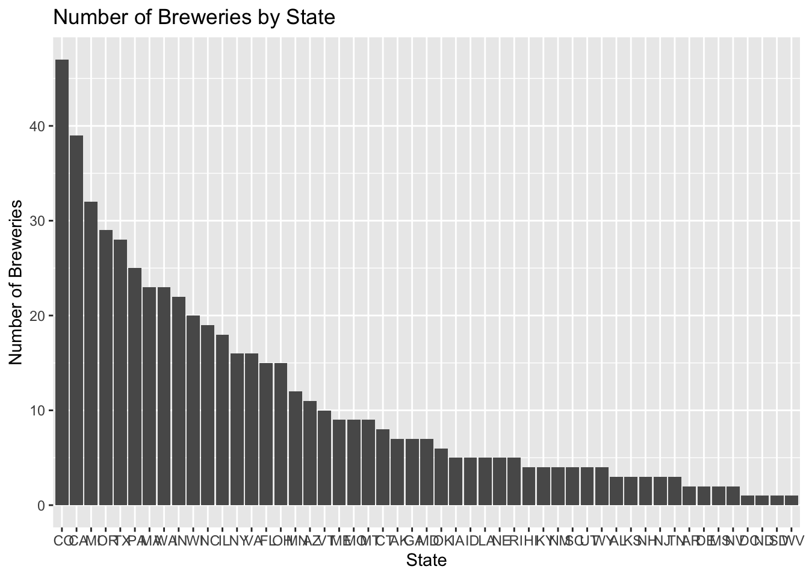
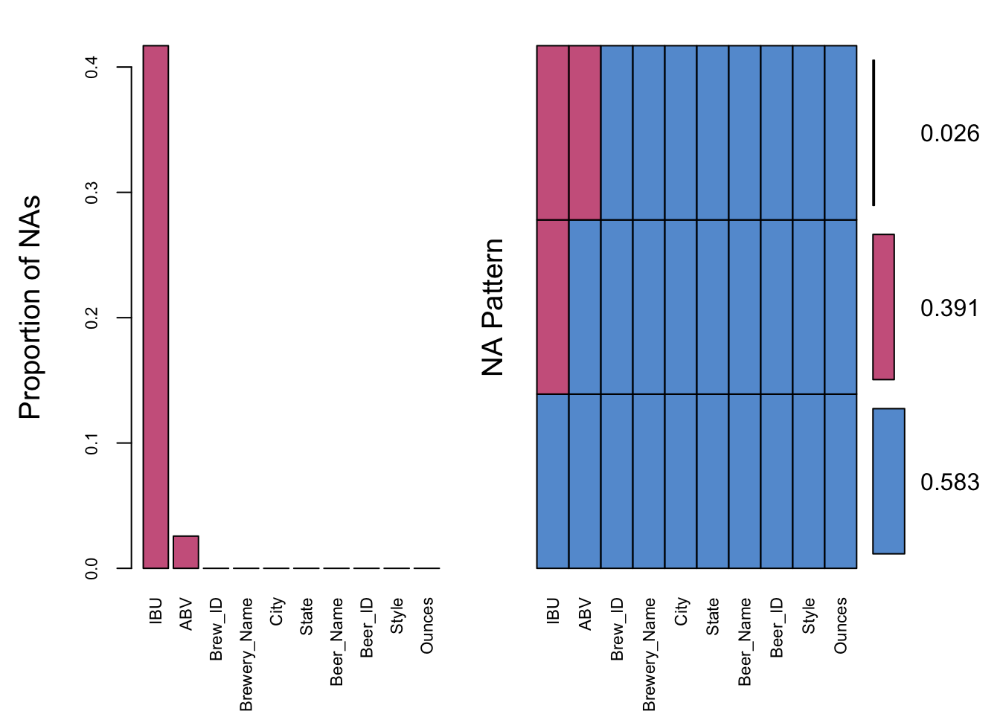
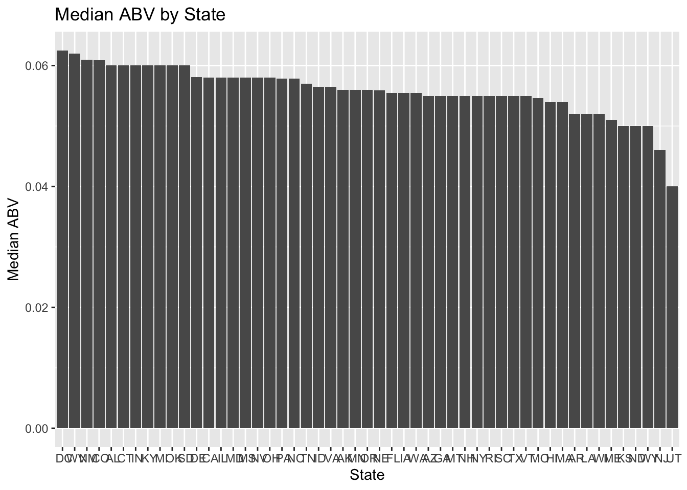
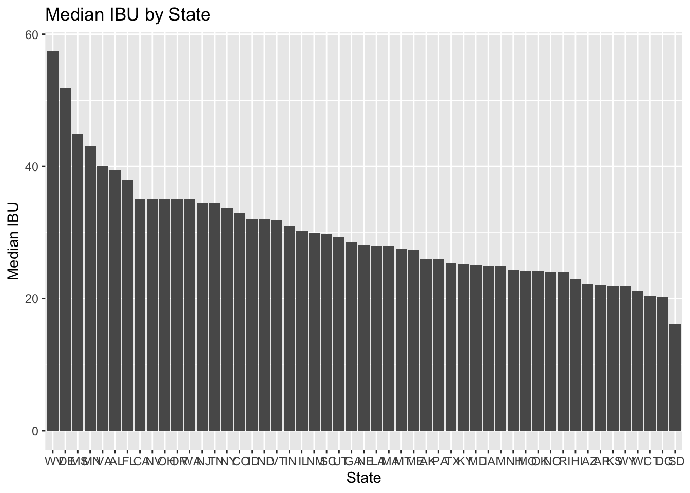
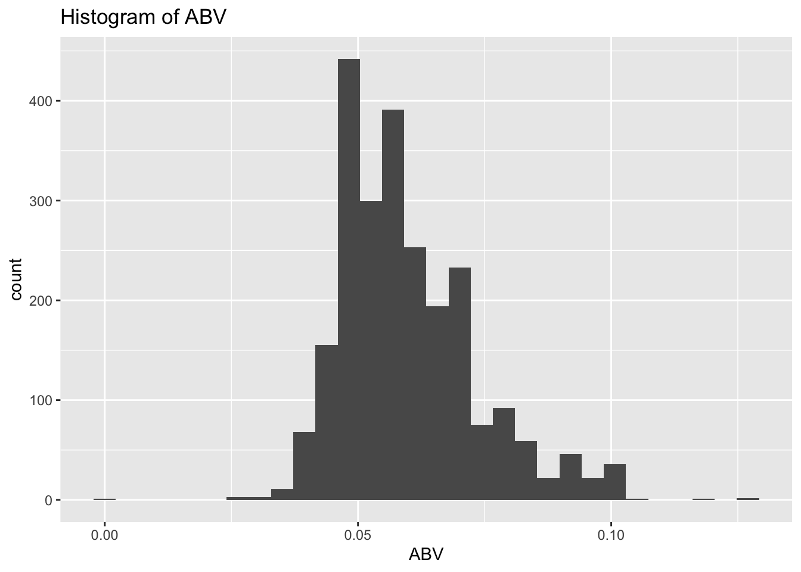
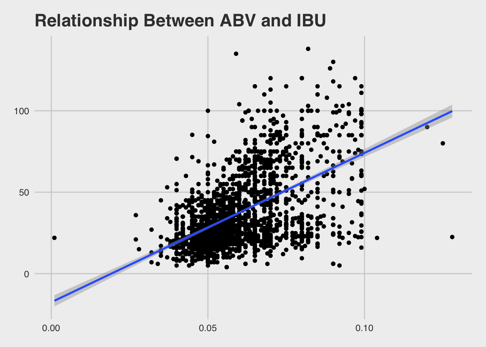
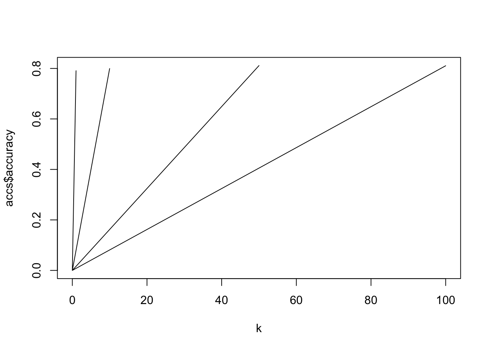
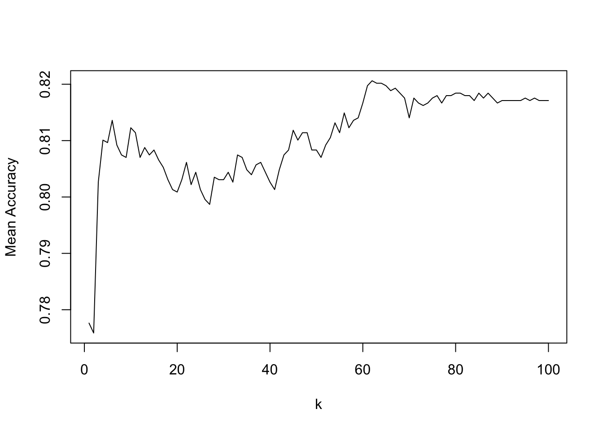

#case study 1
Link to rshiny app! https://tinapai.shinyapps.io/rshiny/
library(tidyverse)
library(VIM)
library(lattice)
library(DMwR)
library(mice)
library(ggplot2)
library(ggthemes)
library(stringr)
library(class)
library(caret)# Reading in the data and observing the first 6 observations for each data set
beers = read.csv("Beers.csv")
breweries = read.csv("Breweries.csv")
head(beers)## Name Beer_ID ABV IBU Brewery_id Style Ounces
## 1 Pub Beer 1436 0.050 NA 409 American Pale Lager 12
## 2 Devil's Cup 2265 0.066 NA 178 American Pale Ale (APA) 12
## 3 Rise of the Phoenix 2264 0.071 NA 178 American IPA 12
## 4 Sinister 2263 0.090 NA 178 American Double / Imperial IPA 12
## 5 Sex and Candy 2262 0.075 NA 178 American IPA 12
## 6 Black Exodus 2261 0.077 NA 178 Oatmeal Stout 12head(breweries)## Brew_ID Name City State
## 1 1 NorthGate Brewing Minneapolis MN
## 2 2 Against the Grain Brewery Louisville KY
## 3 3 Jack's Abby Craft Lagers Framingham MA
## 4 4 Mike Hess Brewing Company San Diego CA
## 5 5 Fort Point Beer Company San Francisco CA
## 6 6 COAST Brewing Company Charleston SC#question 1: how many breweries are present in each state?
There are ranging from 1 to 47 breweries in the states of the US. The state with the most breweries is CO (with 47 breweries) and the states with the fewest are NV, DC, ND, and SD (with 1 brewery).
# We create a new data set where we group it by State and create a tally of of how many breweries are in each state, arrange it in descending order and show the 6 highest and lowest state frequencies
state_breweries <- breweries %>%
group_by(State) %>%
tally() %>%
arrange(desc(n))
head(state_breweries)## # A tibble: 6 x 2
## State n
## <fct> <int>
## 1 " CO" 47
## 2 " CA" 39
## 3 " MI" 32
## 4 " OR" 29
## 5 " TX" 28
## 6 " PA" 25tail(state_breweries)## # A tibble: 6 x 2
## State n
## <fct> <int>
## 1 " MS" 2
## 2 " NV" 2
## 3 " DC" 1
## 4 " ND" 1
## 5 " SD" 1
## 6 " WV" 1#We create a bar graph of our previous results
state_breweries %>%
ggplot(aes(x=reorder(State, -n), y=n)) +
geom_bar(stat = "identity") +
ggtitle("Number of Breweries by State") +
xlab("State") +
ylab("Number of Breweries")
#question 2: merge data
#Merging the data sets with key Brew_ID and Brewery_id since they are the same but have different names
head(breweries)## Brew_ID Name City State
## 1 1 NorthGate Brewing Minneapolis MN
## 2 2 Against the Grain Brewery Louisville KY
## 3 3 Jack's Abby Craft Lagers Framingham MA
## 4 4 Mike Hess Brewing Company San Diego CA
## 5 5 Fort Point Beer Company San Francisco CA
## 6 6 COAST Brewing Company Charleston SChead(beers)## Name Beer_ID ABV IBU Brewery_id Style Ounces
## 1 Pub Beer 1436 0.050 NA 409 American Pale Lager 12
## 2 Devil's Cup 2265 0.066 NA 178 American Pale Ale (APA) 12
## 3 Rise of the Phoenix 2264 0.071 NA 178 American IPA 12
## 4 Sinister 2263 0.090 NA 178 American Double / Imperial IPA 12
## 5 Sex and Candy 2262 0.075 NA 178 American IPA 12
## 6 Black Exodus 2261 0.077 NA 178 Oatmeal Stout 12beer_breweries = breweries %>%
left_join(beers, by = c("Brew_ID" = "Brewery_id"))
names(beer_breweries) <- c("Brew_ID","Brewery_Name","City","State","Beer_Name", "Beer_ID","ABV","IBU","Style","Ounces")
head(beer_breweries)## Brew_ID Brewery_Name City State Beer_Name Beer_ID ABV IBU
## 1 1 NorthGate Brewing Minneapolis MN Get Together 2692 0.045 50
## 2 1 NorthGate Brewing Minneapolis MN Maggie's Leap 2691 0.049 26
## 3 1 NorthGate Brewing Minneapolis MN Wall's End 2690 0.048 19
## 4 1 NorthGate Brewing Minneapolis MN Pumpion 2689 0.060 38
## 5 1 NorthGate Brewing Minneapolis MN Stronghold 2688 0.060 25
## 6 1 NorthGate Brewing Minneapolis MN Parapet ESB 2687 0.056 47
## Style Ounces
## 1 American IPA 16
## 2 Milk / Sweet Stout 16
## 3 English Brown Ale 16
## 4 Pumpkin Ale 16
## 5 American Porter 16
## 6 Extra Special / Strong Bitter (ESB) 16#question 3: fix nas
#Plot the NAs and look the proportion of NAs per column
beer_breweries_miss = aggr(beer_breweries, col=mdc(1:2), numbers=TRUE, sortVars=TRUE, labels=names(beer_breweries), cex.axis=.7, gap=3, ylab=c("Proportion of NAs","NA Pattern"))
##
## Variables sorted by number of missings:
## Variable Count
## IBU 0.41701245
## ABV 0.02572614
## Brew_ID 0.00000000
## Brewery_Name 0.00000000
## City 0.00000000
## State 0.00000000
## Beer_Name 0.00000000
## Beer_ID 0.00000000
## Style 0.00000000
## Ounces 0.00000000#Using Knn imputation as means to fill in the NA values
beer_breweries_impute <- knnImputation(beer_breweries)
beer_breweries <- beer_breweries_impute#question 4: Compute the median alcohol content and international bitterness unit for each state. Plot a bar chart to compare.
Median alcohol content by state ranged from .04 ABV in UT to just over .06 ABV in DC. Below shows graphs of the median ABV by state.
Median bitterness by state ranged from about 20 IBU in KS to just under 60 IBU in WV. Below shows graphs of the median IBU by state.
#median abv by state
state_abv = beer_breweries %>%
group_by(State) %>%
summarise(median = median(ABV, na.rm = TRUE))
head(state_abv)## # A tibble: 6 x 2
## State median
## <fct> <dbl>
## 1 " AK" 0.056
## 2 " AL" 0.06
## 3 " AR" 0.052
## 4 " AZ" 0.055
## 5 " CA" 0.058
## 6 " CO" 0.0609#Bar plot of median abv by state
state_abv %>%
ggplot(aes(x=reorder(State, -median), y=median)) +
geom_bar(stat = "identity") +
ggtitle("Median ABV by State") +
xlab("State") +
ylab("Median ABV")
#median ibu by state
state_ibu = beer_breweries %>%
group_by(State) %>%
summarise(median = median(IBU, na.rm = TRUE))
head(state_ibu)## # A tibble: 6 x 2
## State median
## <fct> <dbl>
## 1 " AK" 26.0
## 2 " AL" 39.5
## 3 " AR" 22.1
## 4 " AZ" 22.2
## 5 " CA" 35
## 6 " CO" 33.0#Bar plot of median IBU by state
state_ibu %>%
ggplot(aes(x=reorder(State, -median), y=median)) +
geom_bar(stat = "identity") +
ggtitle("Median IBU by State") +
xlab("State") +
ylab("Median IBU")
#question 5: Which state has the maximum alcoholic (ABV) beer? Which state has the most bitter (IBU) beer?
The beer with most alcoholic content is the Lee Hill Quadruple Ale from Upslope Brewing Company in Colorado, at .128 ABV.
The beer with the most bitterness is Bitter Bitch Imperial IPA from Astoria Brewing Company in Oregon, at 138 IBU.
#Create a dataset where we arrange the beer with highest ABV in descending order
#CO has the beer with the highest ABV
top_ABV <- beer_breweries %>%
arrange(desc(ABV)) %>%
top_n(10, ABV)
head(top_ABV[c("State", "Brewery_Name", "Beer_Name", "ABV")])## State Brewery_Name Beer_Name ABV
## 1 CO Upslope Brewing Company Lee Hill Series Vol. 5 - Belgian Style Quadrupel Ale 0.128
## 2 KY Against the Grain Brewery London Balling 0.125
## 3 IN Tin Man Brewing Company Csar 0.120
## 4 CO Upslope Brewing Company Lee Hill Series Vol. 4 - Manhattan Style Rye Ale 0.104
## 5 NY Sixpoint Craft Ales 4Beans 0.100
## 6 MI Brewery Vivant Wizard Burial Ground 0.099#Create a dataset where we arrange the beer with highest IBU in descending order
#OR has the beer with the highest IBU
top_IBU <- beer_breweries %>%
arrange(desc(IBU)) %>%
top_n(10, IBU)
head(top_IBU[c("State", "Brewery_Name", "Beer_Name", "IBU")])## State Brewery_Name Beer_Name IBU
## 1 OR Astoria Brewing Company Bitter Bitch Imperial IPA 138
## 2 VA Wolf Hills Brewing Company Troopers Alley IPA 135
## 3 MA Cape Ann Brewing Company Dead-Eye DIPA 130
## 4 OH Christian Moerlein Brewing Company Bay of Bengal Double IPA (2014) 126
## 5 MN Surly Brewing Company Abrasive Ale 120
## 6 VT The Alchemist Heady Topper 120#question 6: Comment on the summary statistics and distribution of the ABV variable. The ABV ranges from .027 to .125, with a median of .057 and mean of .0599. The distribution looks somewhat right skewed.
#Plot a histogram of the ABV distribution
summary(beer_breweries$ABV)## Min. 1st Qu. Median Mean 3rd Qu. Max.
## 0.00100 0.05000 0.05600 0.05971 0.06700 0.12800beer_breweries %>%
ggplot(aes(x=ABV)) +
geom_histogram() +
ggtitle("Histogram of ABV")## `stat_bin()` using `bins = 30`. Pick better value with `binwidth`.
#question 7: Is there a relationship between the bitterness of the beer and its alcoholic content?
There seems to be a positive correlation between ABV and IBU. So that means there is a positive relationship betwen ABV and IBU so as ABV increases, so does IBU.
#Plot a scatterplot comparing the two variables ABV and IBU with a regression line
beer_breweries %>% ggplot(aes(x=ABV,y=IBU)) + theme_fivethirtyeight() + geom_point()+geom_smooth(method=lm) +
xlab("Alcohol By Volume (ABV)") +
ylab("International Bitterness Unit (IBU)") +
ggtitle( "Relationship Between ABV and IBU")
#Calculate the correlation betwen ABV and IBU
cor(beer_breweries$ABV,beer_breweries$IBU)## [1] 0.539295#question 8: IPA vs Ale
# We use Regex to find which style is an Ale and create a boolean column for that
summary(as.factor(beer_breweries$Style))## Abbey Single Ale
## 5 2
## Altbier American Adjunct Lager
## 13 18
## American Amber / Red Ale American Amber / Red Lager
## 133 29
## American Barleywine American Black Ale
## 3 36
## American Blonde Ale American Brown Ale
## 108 70
## American Dark Wheat Ale American Double / Imperial IPA
## 7 105
## American Double / Imperial Pilsner American Double / Imperial Stout
## 2 9
## American India Pale Lager American IPA
## 3 424
## American Malt Liquor American Pale Ale (APA)
## 1 245
## American Pale Lager American Pale Wheat Ale
## 39 97
## American Pilsner American Porter
## 25 68
## American Stout American Strong Ale
## 39 14
## American White IPA American Wild Ale
## 11 6
## Baltic Porter Belgian Dark Ale
## 6 11
## Belgian IPA Belgian Pale Ale
## 18 24
## Belgian Strong Dark Ale Belgian Strong Pale Ale
## 6 7
## Berliner Weissbier Bière de Garde
## 11 7
## Bock Braggot
## 7 1
## California Common / Steam Beer Chile Beer
## 6 3
## Cider Cream Ale
## 37 29
## Czech Pilsener Doppelbock
## 28 7
## Dortmunder / Export Lager Dubbel
## 6 5
## Dunkelweizen English Barleywine
## 4 3
## English Bitter English Brown Ale
## 3 18
## English Dark Mild Ale English India Pale Ale (IPA)
## 6 13
## English Pale Ale English Pale Mild Ale
## 12 3
## English Stout English Strong Ale
## 2 4
## Euro Dark Lager Euro Pale Lager
## 5 2
## Extra Special / Strong Bitter (ESB) Flanders Oud Bruin
## 20 1
## Flanders Red Ale Foreign / Export Stout
## 1 6
## Fruit / Vegetable Beer German Pilsener
## 49 36
## Gose Grisette
## 10 1
## Hefeweizen Herbed / Spiced Beer
## 40 9
## Irish Dry Stout Irish Red Ale
## 5 12
## Keller Bier / Zwickel Bier Kölsch
## 3 42
## Kristalweizen Light Lager
## 1 12
## Low Alcohol Beer Maibock / Helles Bock
## 1 5
## Märzen / Oktoberfest Mead
## 30 5
## Milk / Sweet Stout Munich Dunkel Lager
## 10 4
## Munich Helles Lager Oatmeal Stout
## 20 18
## Old Ale Other
## 2 1
## Pumpkin Ale Quadrupel (Quad)
## 23 4
## Radler Rauchbier
## 3 2
## Roggenbier Russian Imperial Stout
## 2 11
## Rye Beer Saison / Farmhouse Ale
## 18 52
## Schwarzbier Scotch Ale / Wee Heavy
## 9 15
## Scottish Ale Shandy
## 19 3
## Smoked Beer Tripel
## 1 11
## Vienna Lager Wheat Ale
## 20 1
## Winter Warmer Witbier
## 15 51beer_breweries$Style <- as.character(beer_breweries$Style)
beer_breweries$is_ale <- str_detect(beer_breweries$Style, "\\bAle\\b")
summary(beer_breweries$is_ale)## Mode FALSE TRUE
## logical 1434 976beer_breweries %>%
filter(is_ale) %>%
select(Style) %>%
count(Style)## # A tibble: 29 x 2
## Style n
## <chr> <int>
## 1 Abbey Single Ale 2
## 2 American Amber / Red Ale 133
## 3 American Black Ale 36
## 4 American Blonde Ale 108
## 5 American Brown Ale 70
## 6 American Dark Wheat Ale 7
## 7 American Pale Ale (APA) 245
## 8 American Pale Wheat Ale 97
## 9 American Strong Ale 14
## 10 American Wild Ale 6
## # … with 19 more rows# We use Regex to find which style is an IPA and create a boolean column for that
beer_breweries$is_IPA <- str_detect(beer_breweries$Style, "\\bIPA\\b")
summary(beer_breweries$is_IPA)## Mode FALSE TRUE
## logical 1839 571beer_breweries %>%
filter(is_IPA) %>%
select(Style) %>%
count(Style)## # A tibble: 5 x 2
## Style n
## <chr> <int>
## 1 American Double / Imperial IPA 105
## 2 American IPA 424
## 3 American White IPA 11
## 4 Belgian IPA 18
## 5 English India Pale Ale (IPA) 13beer_breweries## Brew_ID Brewery_Name City State
## 1 1 NorthGate Brewing Minneapolis MN
## 2 1 NorthGate Brewing Minneapolis MN
## 3 1 NorthGate Brewing Minneapolis MN
## 4 1 NorthGate Brewing Minneapolis MN
## 5 1 NorthGate Brewing Minneapolis MN
## 6 1 NorthGate Brewing Minneapolis MN
## 7 2 Against the Grain Brewery Louisville KY
## 8 2 Against the Grain Brewery Louisville KY
## 9 2 Against the Grain Brewery Louisville KY
## 10 2 Against the Grain Brewery Louisville KY
## 11 2 Against the Grain Brewery Louisville KY
## 12 2 Against the Grain Brewery Louisville KY
## 13 2 Against the Grain Brewery Louisville KY
## 14 2 Against the Grain Brewery Louisville KY
## 15 2 Against the Grain Brewery Louisville KY
## 16 2 Against the Grain Brewery Louisville KY
## 17 2 Against the Grain Brewery Louisville KY
## 18 2 Against the Grain Brewery Louisville KY
## 19 2 Against the Grain Brewery Louisville KY
## 20 3 Jack's Abby Craft Lagers Framingham MA
## 21 3 Jack's Abby Craft Lagers Framingham MA
## 22 3 Jack's Abby Craft Lagers Framingham MA
## 23 3 Jack's Abby Craft Lagers Framingham MA
## 24 3 Jack's Abby Craft Lagers Framingham MA
## 25 4 Mike Hess Brewing Company San Diego CA
## 26 4 Mike Hess Brewing Company San Diego CA
## 27 4 Mike Hess Brewing Company San Diego CA
## 28 4 Mike Hess Brewing Company San Diego CA
## 29 4 Mike Hess Brewing Company San Diego CA
## 30 4 Mike Hess Brewing Company San Diego CA
## 31 5 Fort Point Beer Company San Francisco CA
## 32 5 Fort Point Beer Company San Francisco CA
## 33 5 Fort Point Beer Company San Francisco CA
## 34 5 Fort Point Beer Company San Francisco CA
## 35 6 COAST Brewing Company Charleston SC
## 36 6 COAST Brewing Company Charleston SC
## 37 6 COAST Brewing Company Charleston SC
## 38 6 COAST Brewing Company Charleston SC
## 39 6 COAST Brewing Company Charleston SC
## 40 6 COAST Brewing Company Charleston SC
## 41 7 Great Divide Brewing Company Denver CO
## 42 7 Great Divide Brewing Company Denver CO
## 43 7 Great Divide Brewing Company Denver CO
## 44 7 Great Divide Brewing Company Denver CO
## 45 7 Great Divide Brewing Company Denver CO
## 46 7 Great Divide Brewing Company Denver CO
## 47 7 Great Divide Brewing Company Denver CO
## 48 7 Great Divide Brewing Company Denver CO
## 49 7 Great Divide Brewing Company Denver CO
## 50 8 Tapistry Brewing Bridgman MI
## 51 8 Tapistry Brewing Bridgman MI
## 52 8 Tapistry Brewing Bridgman MI
## 53 9 Big Lake Brewing Holland MI
## 54 9 Big Lake Brewing Holland MI
## 55 10 The Mitten Brewing Company Grand Rapids MI
## 56 11 Brewery Vivant Grand Rapids MI
## 57 11 Brewery Vivant Grand Rapids MI
## 58 11 Brewery Vivant Grand Rapids MI
## 59 11 Brewery Vivant Grand Rapids MI
## 60 11 Brewery Vivant Grand Rapids MI
## 61 11 Brewery Vivant Grand Rapids MI
## 62 11 Brewery Vivant Grand Rapids MI
## 63 11 Brewery Vivant Grand Rapids MI
## 64 11 Brewery Vivant Grand Rapids MI
## 65 11 Brewery Vivant Grand Rapids MI
## 66 11 Brewery Vivant Grand Rapids MI
## 67 11 Brewery Vivant Grand Rapids MI
## 68 11 Brewery Vivant Grand Rapids MI
## 69 11 Brewery Vivant Grand Rapids MI
## 70 11 Brewery Vivant Grand Rapids MI
## 71 11 Brewery Vivant Grand Rapids MI
## 72 11 Brewery Vivant Grand Rapids MI
## 73 11 Brewery Vivant Grand Rapids MI
## 74 11 Brewery Vivant Grand Rapids MI
## 75 11 Brewery Vivant Grand Rapids MI
## 76 11 Brewery Vivant Grand Rapids MI
## 77 11 Brewery Vivant Grand Rapids MI
## 78 11 Brewery Vivant Grand Rapids MI
## 79 11 Brewery Vivant Grand Rapids MI
## 80 11 Brewery Vivant Grand Rapids MI
## 81 11 Brewery Vivant Grand Rapids MI
## 82 11 Brewery Vivant Grand Rapids MI
## 83 11 Brewery Vivant Grand Rapids MI
## Beer_Name Beer_ID ABV IBU
## 1 Get Together 2692 0.04500000 50.00000
## 2 Maggie's Leap 2691 0.04900000 26.00000
## 3 Wall's End 2690 0.04800000 19.00000
## 4 Pumpion 2689 0.06000000 38.00000
## 5 Stronghold 2688 0.06000000 25.00000
## 6 Parapet ESB 2687 0.05600000 47.00000
## 7 Citra Ass Down 2686 0.08000000 68.00000
## 8 London Balling 2685 0.12500000 80.00000
## 9 35 K 2684 0.07700000 25.00000
## 10 A Beer 2683 0.04200000 42.00000
## 11 Rules are Rules 2682 0.05000000 25.00000
## 12 Flesh Gourd'n 2681 0.06600000 21.00000
## 13 Sho'nuff 2680 0.04000000 13.00000
## 14 Bloody Show 2679 0.05500000 17.00000
## 15 Rico Sauvin 2678 0.07600000 68.00000
## 16 Coq de la Marche 2677 0.05100000 38.00000
## 17 Kamen Knuddeln 2676 0.06500000 27.07077
## 18 Pile of Face 2675 0.06000000 65.00000
## 19 The Brown Note 2674 0.05000000 20.00000
## 20 House Lager 2673 0.05200000 18.00000
## 21 Leisure Time 2672 0.04800000 15.00000
## 22 Excess IPL 2671 0.07200000 80.00000
## 23 Hoponius Union 2670 0.06700000 65.00000
## 24 Calyptra 2669 0.04900000 45.00000
## 25 Habitus (2014) 2668 0.08000000 100.00000
## 26 Solis 2667 0.07500000 85.00000
## 27 Jucundus 2666 0.06000000 24.00000
## 28 Habitus 2664 0.08000000 100.00000
## 29 Grazias 2663 0.06300000 30.00000
## 30 Claritas 2662 0.05800000 28.00000
## 31 Park 2661 0.04700000 19.00000
## 32 Westfalia 2660 0.05600000 16.00000
## 33 KSA 2659 0.04600000 17.00000
## 34 Villager 2658 0.06300000 42.00000
## 35 Blackbeard 2657 0.09300000 68.83336
## 36 Rye Knot 2656 0.06200000 31.06694
## 37 Dead Arm 2655 0.06000000 29.45501
## 38 32°/50° Kölsch 2654 0.04800000 17.37159
## 39 HopArt 2653 0.07700000 50.42000
## 40 Boy King 2652 0.09700000 73.88710
## 41 Denver Pale Ale (Artist Series No. 1) 2650 0.05000000 43.55786
## 42 Hibernation Ale 2649 0.08700000 45.38342
## 43 Whitewater 2648 0.06100000 34.05883
## 44 Rumble 2647 0.07100000 57.10431
## 45 Orabelle 2646 0.08300000 24.52820
## 46 Lasso 2645 0.05000000 40.66554
## 47 Yeti Imperial Stout 2644 0.09500000 75.00000
## 48 Colette 2643 0.07300000 36.67217
## 49 Titan IPA 2642 0.07100000 59.11284
## 50 Peck's Porter 2640 0.06500000 35.00000
## 51 Reactor 2448 0.07000000 46.26044
## 52 Mr. Orange 2447 0.05700000 20.90620
## 53 Dark Star 2639 0.08000000 54.00000
## 54 Ryecoe 2469 0.06200000 36.11265
## 55 G. B. Russo’s Italian Pistachio Pale Ale 2638 0.05200000 35.72599
## 56 Belfort 2637 0.06700000 29.53670
## 57 Star Runner 2636 0.06000000 19.65575
## 58 Tart Side of the Barrel 2598 0.09800000 44.50419
## 59 Linnaeus Mango IPA 2597 0.06000000 40.63963
## 60 Beasts A'Burnin' 2548 0.07000000 29.60718
## 61 Verdun 2542 0.07700000 18.11551
## 62 Barrel Aged Triomphe 2541 0.06500000 29.99927
## 63 Cherry Doppelbock 2504 0.06500000 30.20745
## 64 Tropical Saison 2500 0.06500000 21.85160
## 65 Beach Patrol 2499 0.06500000 19.01107
## 66 Nuit Serpent 2498 0.05000000 24.73114
## 67 Paris 2481 0.09000000 24.72110
## 68 The Grand Army 2476 0.05500000 18.03187
## 69 Acidulated Trip 2467 0.05900000 26.72386
## 70 Root Stock 2466 0.06600000 23.44952
## 71 Mind Games 2465 0.04100000 24.64602
## 72 Sous Chef 2433 0.08200000 24.05908
## 73 Dubbelicious 2418 0.06500000 27.83011
## 74 Psychopomp 2416 0.06200000 24.44261
## 75 Fat Paczki 2382 0.05299270 26.52762
## 76 Earth-Like Planets 2381 0.05299534 26.52686
## 77 Ski Patrol 2290 0.06100000 19.31383
## 78 Viking Ice Hole 2241 0.06300000 19.91014
## 79 Rye Porter 2240 0.05600000 22.56262
## 80 Wizard Burial Ground 2137 0.09900000 29.56784
## 81 Smoky Wheat 2101 0.05100000 22.16818
## 82 BRIPA 2092 0.06200000 28.31030
## 83 Mela 2091 0.06200000 26.96199
## Style Ounces is_ale is_IPA
## 1 American IPA 16 FALSE TRUE
## 2 Milk / Sweet Stout 16 FALSE FALSE
## 3 English Brown Ale 16 TRUE FALSE
## 4 Pumpkin Ale 16 TRUE FALSE
## 5 American Porter 16 FALSE FALSE
## 6 Extra Special / Strong Bitter (ESB) 16 FALSE FALSE
## 7 American Double / Imperial IPA 16 FALSE TRUE
## 8 English Barleywine 16 FALSE FALSE
## 9 Milk / Sweet Stout 16 FALSE FALSE
## 10 American Pale Ale (APA) 16 TRUE FALSE
## 11 German Pilsener 16 FALSE FALSE
## 12 Pumpkin Ale 16 TRUE FALSE
## 13 Belgian Pale Ale 16 TRUE FALSE
## 14 American Pilsner 16 FALSE FALSE
## 15 American Double / Imperial IPA 16 FALSE TRUE
## 16 Saison / Farmhouse Ale 16 TRUE FALSE
## 17 American Wild Ale 16 TRUE FALSE
## 18 American IPA 16 FALSE TRUE
## 19 English Brown Ale 16 TRUE FALSE
## 20 Keller Bier / Zwickel Bier 16 FALSE FALSE
## 21 American Pale Lager 12 FALSE FALSE
## 22 American India Pale Lager 16 FALSE FALSE
## 23 American India Pale Lager 12 FALSE FALSE
## 24 American India Pale Lager 12 FALSE FALSE
## 25 American Double / Imperial IPA 16 FALSE TRUE
## 26 American IPA 16 FALSE TRUE
## 27 Wheat Ale 16 TRUE FALSE
## 28 American Double / Imperial IPA 16 FALSE TRUE
## 29 Cream Ale 16 TRUE FALSE
## 30 Kölsch 16 FALSE FALSE
## 31 American Pale Wheat Ale 12 TRUE FALSE
## 32 American Amber / Red Ale 12 TRUE FALSE
## 33 Kölsch 12 FALSE FALSE
## 34 American IPA 12 FALSE TRUE
## 35 American Double / Imperial Stout 12 FALSE FALSE
## 36 American Brown Ale 12 TRUE FALSE
## 37 American Pale Ale (APA) 12 TRUE FALSE
## 38 Kölsch 16 FALSE FALSE
## 39 American IPA 16 FALSE TRUE
## 40 American Double / Imperial IPA 16 FALSE TRUE
## 41 American Pale Ale (APA) 12 TRUE FALSE
## 42 Old Ale 12 TRUE FALSE
## 43 American Pale Wheat Ale 12 TRUE FALSE
## 44 American IPA 12 FALSE TRUE
## 45 Tripel 12 FALSE FALSE
## 46 American IPA 12 FALSE TRUE
## 47 Russian Imperial Stout 12 FALSE FALSE
## 48 Saison / Farmhouse Ale 12 TRUE FALSE
## 49 American IPA 12 FALSE TRUE
## 50 American Porter 16 FALSE FALSE
## 51 American IPA 16 FALSE TRUE
## 52 Witbier 16 FALSE FALSE
## 53 American Stout 16 FALSE FALSE
## 54 American IPA 16 FALSE TRUE
## 55 American Pale Ale (APA) 16 TRUE FALSE
## 56 Saison / Farmhouse Ale 16 TRUE FALSE
## 57 Belgian Pale Ale 16 TRUE FALSE
## 58 American Double / Imperial Stout 16 FALSE FALSE
## 59 American IPA 16 FALSE TRUE
## 60 Rauchbier 16 FALSE FALSE
## 61 Bière de Garde 16 FALSE FALSE
## 62 Belgian IPA 16 FALSE TRUE
## 63 Doppelbock 16 FALSE FALSE
## 64 Saison / Farmhouse Ale 16 TRUE FALSE
## 65 Witbier 16 FALSE FALSE
## 66 Belgian IPA 16 FALSE TRUE
## 67 Saison / Farmhouse Ale 16 TRUE FALSE
## 68 Belgian IPA 16 FALSE TRUE
## 69 Saison / Farmhouse Ale 16 TRUE FALSE
## 70 Rye Beer 16 FALSE FALSE
## 71 Dunkelweizen 16 FALSE FALSE
## 72 Belgian Strong Pale Ale 16 TRUE FALSE
## 73 Dubbel 16 FALSE FALSE
## 74 Belgian Dark Ale 16 TRUE FALSE
## 75 Belgian Dark Ale 16 TRUE FALSE
## 76 Belgian Pale Ale 16 TRUE FALSE
## 77 Witbier 16 FALSE FALSE
## 78 Oatmeal Stout 16 FALSE FALSE
## 79 American Porter 16 FALSE FALSE
## 80 Quadrupel (Quad) 16 FALSE FALSE
## 81 Rauchbier 16 FALSE FALSE
## 82 Belgian IPA 16 FALSE TRUE
## 83 Belgian Dark Ale 16 TRUE FALSE
## [ reached 'max' / getOption("max.print") -- omitted 2327 rows ]#Based on the two previous columns we create a new column which labels the observations as IPA or Ale
for(i in 1:dim(beer_breweries)[1])
{
if (beer_breweries$is_ale[i]=="TRUE"& beer_breweries$is_IPA[i]== "FALSE")
{
beer_breweries$IPA_Ale[i] <- "Ale"
}
else if (beer_breweries$is_IPA[i]=="TRUE" & beer_breweries$is_ale[i]=="FALSE")
{
beer_breweries$IPA_Ale[i] <- "IPA"
}
else
{
beer_breweries$IPA_Ale[i] <- "Other"
}
}
beer_breweries## Brew_ID Brewery_Name City State
## 1 1 NorthGate Brewing Minneapolis MN
## 2 1 NorthGate Brewing Minneapolis MN
## 3 1 NorthGate Brewing Minneapolis MN
## 4 1 NorthGate Brewing Minneapolis MN
## 5 1 NorthGate Brewing Minneapolis MN
## 6 1 NorthGate Brewing Minneapolis MN
## 7 2 Against the Grain Brewery Louisville KY
## 8 2 Against the Grain Brewery Louisville KY
## 9 2 Against the Grain Brewery Louisville KY
## 10 2 Against the Grain Brewery Louisville KY
## 11 2 Against the Grain Brewery Louisville KY
## 12 2 Against the Grain Brewery Louisville KY
## 13 2 Against the Grain Brewery Louisville KY
## 14 2 Against the Grain Brewery Louisville KY
## 15 2 Against the Grain Brewery Louisville KY
## 16 2 Against the Grain Brewery Louisville KY
## 17 2 Against the Grain Brewery Louisville KY
## 18 2 Against the Grain Brewery Louisville KY
## 19 2 Against the Grain Brewery Louisville KY
## 20 3 Jack's Abby Craft Lagers Framingham MA
## 21 3 Jack's Abby Craft Lagers Framingham MA
## 22 3 Jack's Abby Craft Lagers Framingham MA
## 23 3 Jack's Abby Craft Lagers Framingham MA
## 24 3 Jack's Abby Craft Lagers Framingham MA
## 25 4 Mike Hess Brewing Company San Diego CA
## 26 4 Mike Hess Brewing Company San Diego CA
## 27 4 Mike Hess Brewing Company San Diego CA
## 28 4 Mike Hess Brewing Company San Diego CA
## 29 4 Mike Hess Brewing Company San Diego CA
## 30 4 Mike Hess Brewing Company San Diego CA
## 31 5 Fort Point Beer Company San Francisco CA
## 32 5 Fort Point Beer Company San Francisco CA
## 33 5 Fort Point Beer Company San Francisco CA
## 34 5 Fort Point Beer Company San Francisco CA
## 35 6 COAST Brewing Company Charleston SC
## 36 6 COAST Brewing Company Charleston SC
## 37 6 COAST Brewing Company Charleston SC
## 38 6 COAST Brewing Company Charleston SC
## 39 6 COAST Brewing Company Charleston SC
## 40 6 COAST Brewing Company Charleston SC
## 41 7 Great Divide Brewing Company Denver CO
## 42 7 Great Divide Brewing Company Denver CO
## 43 7 Great Divide Brewing Company Denver CO
## 44 7 Great Divide Brewing Company Denver CO
## 45 7 Great Divide Brewing Company Denver CO
## 46 7 Great Divide Brewing Company Denver CO
## 47 7 Great Divide Brewing Company Denver CO
## 48 7 Great Divide Brewing Company Denver CO
## 49 7 Great Divide Brewing Company Denver CO
## 50 8 Tapistry Brewing Bridgman MI
## 51 8 Tapistry Brewing Bridgman MI
## 52 8 Tapistry Brewing Bridgman MI
## 53 9 Big Lake Brewing Holland MI
## 54 9 Big Lake Brewing Holland MI
## 55 10 The Mitten Brewing Company Grand Rapids MI
## 56 11 Brewery Vivant Grand Rapids MI
## 57 11 Brewery Vivant Grand Rapids MI
## 58 11 Brewery Vivant Grand Rapids MI
## 59 11 Brewery Vivant Grand Rapids MI
## 60 11 Brewery Vivant Grand Rapids MI
## 61 11 Brewery Vivant Grand Rapids MI
## 62 11 Brewery Vivant Grand Rapids MI
## 63 11 Brewery Vivant Grand Rapids MI
## 64 11 Brewery Vivant Grand Rapids MI
## 65 11 Brewery Vivant Grand Rapids MI
## 66 11 Brewery Vivant Grand Rapids MI
## 67 11 Brewery Vivant Grand Rapids MI
## 68 11 Brewery Vivant Grand Rapids MI
## 69 11 Brewery Vivant Grand Rapids MI
## 70 11 Brewery Vivant Grand Rapids MI
## 71 11 Brewery Vivant Grand Rapids MI
## 72 11 Brewery Vivant Grand Rapids MI
## 73 11 Brewery Vivant Grand Rapids MI
## 74 11 Brewery Vivant Grand Rapids MI
## 75 11 Brewery Vivant Grand Rapids MI
## 76 11 Brewery Vivant Grand Rapids MI
## Beer_Name Beer_ID ABV IBU
## 1 Get Together 2692 0.04500000 50.00000
## 2 Maggie's Leap 2691 0.04900000 26.00000
## 3 Wall's End 2690 0.04800000 19.00000
## 4 Pumpion 2689 0.06000000 38.00000
## 5 Stronghold 2688 0.06000000 25.00000
## 6 Parapet ESB 2687 0.05600000 47.00000
## 7 Citra Ass Down 2686 0.08000000 68.00000
## 8 London Balling 2685 0.12500000 80.00000
## 9 35 K 2684 0.07700000 25.00000
## 10 A Beer 2683 0.04200000 42.00000
## 11 Rules are Rules 2682 0.05000000 25.00000
## 12 Flesh Gourd'n 2681 0.06600000 21.00000
## 13 Sho'nuff 2680 0.04000000 13.00000
## 14 Bloody Show 2679 0.05500000 17.00000
## 15 Rico Sauvin 2678 0.07600000 68.00000
## 16 Coq de la Marche 2677 0.05100000 38.00000
## 17 Kamen Knuddeln 2676 0.06500000 27.07077
## 18 Pile of Face 2675 0.06000000 65.00000
## 19 The Brown Note 2674 0.05000000 20.00000
## 20 House Lager 2673 0.05200000 18.00000
## 21 Leisure Time 2672 0.04800000 15.00000
## 22 Excess IPL 2671 0.07200000 80.00000
## 23 Hoponius Union 2670 0.06700000 65.00000
## 24 Calyptra 2669 0.04900000 45.00000
## 25 Habitus (2014) 2668 0.08000000 100.00000
## 26 Solis 2667 0.07500000 85.00000
## 27 Jucundus 2666 0.06000000 24.00000
## 28 Habitus 2664 0.08000000 100.00000
## 29 Grazias 2663 0.06300000 30.00000
## 30 Claritas 2662 0.05800000 28.00000
## 31 Park 2661 0.04700000 19.00000
## 32 Westfalia 2660 0.05600000 16.00000
## 33 KSA 2659 0.04600000 17.00000
## 34 Villager 2658 0.06300000 42.00000
## 35 Blackbeard 2657 0.09300000 68.83336
## 36 Rye Knot 2656 0.06200000 31.06694
## 37 Dead Arm 2655 0.06000000 29.45501
## 38 32°/50° Kölsch 2654 0.04800000 17.37159
## 39 HopArt 2653 0.07700000 50.42000
## 40 Boy King 2652 0.09700000 73.88710
## 41 Denver Pale Ale (Artist Series No. 1) 2650 0.05000000 43.55786
## 42 Hibernation Ale 2649 0.08700000 45.38342
## 43 Whitewater 2648 0.06100000 34.05883
## 44 Rumble 2647 0.07100000 57.10431
## 45 Orabelle 2646 0.08300000 24.52820
## 46 Lasso 2645 0.05000000 40.66554
## 47 Yeti Imperial Stout 2644 0.09500000 75.00000
## 48 Colette 2643 0.07300000 36.67217
## 49 Titan IPA 2642 0.07100000 59.11284
## 50 Peck's Porter 2640 0.06500000 35.00000
## 51 Reactor 2448 0.07000000 46.26044
## 52 Mr. Orange 2447 0.05700000 20.90620
## 53 Dark Star 2639 0.08000000 54.00000
## 54 Ryecoe 2469 0.06200000 36.11265
## 55 G. B. Russo’s Italian Pistachio Pale Ale 2638 0.05200000 35.72599
## 56 Belfort 2637 0.06700000 29.53670
## 57 Star Runner 2636 0.06000000 19.65575
## 58 Tart Side of the Barrel 2598 0.09800000 44.50419
## 59 Linnaeus Mango IPA 2597 0.06000000 40.63963
## 60 Beasts A'Burnin' 2548 0.07000000 29.60718
## 61 Verdun 2542 0.07700000 18.11551
## 62 Barrel Aged Triomphe 2541 0.06500000 29.99927
## 63 Cherry Doppelbock 2504 0.06500000 30.20745
## 64 Tropical Saison 2500 0.06500000 21.85160
## 65 Beach Patrol 2499 0.06500000 19.01107
## 66 Nuit Serpent 2498 0.05000000 24.73114
## 67 Paris 2481 0.09000000 24.72110
## 68 The Grand Army 2476 0.05500000 18.03187
## 69 Acidulated Trip 2467 0.05900000 26.72386
## 70 Root Stock 2466 0.06600000 23.44952
## 71 Mind Games 2465 0.04100000 24.64602
## 72 Sous Chef 2433 0.08200000 24.05908
## 73 Dubbelicious 2418 0.06500000 27.83011
## 74 Psychopomp 2416 0.06200000 24.44261
## 75 Fat Paczki 2382 0.05299270 26.52762
## 76 Earth-Like Planets 2381 0.05299534 26.52686
## Style Ounces is_ale is_IPA IPA_Ale
## 1 American IPA 16 FALSE TRUE IPA
## 2 Milk / Sweet Stout 16 FALSE FALSE Other
## 3 English Brown Ale 16 TRUE FALSE Ale
## 4 Pumpkin Ale 16 TRUE FALSE Ale
## 5 American Porter 16 FALSE FALSE Other
## 6 Extra Special / Strong Bitter (ESB) 16 FALSE FALSE Other
## 7 American Double / Imperial IPA 16 FALSE TRUE IPA
## 8 English Barleywine 16 FALSE FALSE Other
## 9 Milk / Sweet Stout 16 FALSE FALSE Other
## 10 American Pale Ale (APA) 16 TRUE FALSE Ale
## 11 German Pilsener 16 FALSE FALSE Other
## 12 Pumpkin Ale 16 TRUE FALSE Ale
## 13 Belgian Pale Ale 16 TRUE FALSE Ale
## 14 American Pilsner 16 FALSE FALSE Other
## 15 American Double / Imperial IPA 16 FALSE TRUE IPA
## 16 Saison / Farmhouse Ale 16 TRUE FALSE Ale
## 17 American Wild Ale 16 TRUE FALSE Ale
## 18 American IPA 16 FALSE TRUE IPA
## 19 English Brown Ale 16 TRUE FALSE Ale
## 20 Keller Bier / Zwickel Bier 16 FALSE FALSE Other
## 21 American Pale Lager 12 FALSE FALSE Other
## 22 American India Pale Lager 16 FALSE FALSE Other
## 23 American India Pale Lager 12 FALSE FALSE Other
## 24 American India Pale Lager 12 FALSE FALSE Other
## 25 American Double / Imperial IPA 16 FALSE TRUE IPA
## 26 American IPA 16 FALSE TRUE IPA
## 27 Wheat Ale 16 TRUE FALSE Ale
## 28 American Double / Imperial IPA 16 FALSE TRUE IPA
## 29 Cream Ale 16 TRUE FALSE Ale
## 30 Kölsch 16 FALSE FALSE Other
## 31 American Pale Wheat Ale 12 TRUE FALSE Ale
## 32 American Amber / Red Ale 12 TRUE FALSE Ale
## 33 Kölsch 12 FALSE FALSE Other
## 34 American IPA 12 FALSE TRUE IPA
## 35 American Double / Imperial Stout 12 FALSE FALSE Other
## 36 American Brown Ale 12 TRUE FALSE Ale
## 37 American Pale Ale (APA) 12 TRUE FALSE Ale
## 38 Kölsch 16 FALSE FALSE Other
## 39 American IPA 16 FALSE TRUE IPA
## 40 American Double / Imperial IPA 16 FALSE TRUE IPA
## 41 American Pale Ale (APA) 12 TRUE FALSE Ale
## 42 Old Ale 12 TRUE FALSE Ale
## 43 American Pale Wheat Ale 12 TRUE FALSE Ale
## 44 American IPA 12 FALSE TRUE IPA
## 45 Tripel 12 FALSE FALSE Other
## 46 American IPA 12 FALSE TRUE IPA
## 47 Russian Imperial Stout 12 FALSE FALSE Other
## 48 Saison / Farmhouse Ale 12 TRUE FALSE Ale
## 49 American IPA 12 FALSE TRUE IPA
## 50 American Porter 16 FALSE FALSE Other
## 51 American IPA 16 FALSE TRUE IPA
## 52 Witbier 16 FALSE FALSE Other
## 53 American Stout 16 FALSE FALSE Other
## 54 American IPA 16 FALSE TRUE IPA
## 55 American Pale Ale (APA) 16 TRUE FALSE Ale
## 56 Saison / Farmhouse Ale 16 TRUE FALSE Ale
## 57 Belgian Pale Ale 16 TRUE FALSE Ale
## 58 American Double / Imperial Stout 16 FALSE FALSE Other
## 59 American IPA 16 FALSE TRUE IPA
## 60 Rauchbier 16 FALSE FALSE Other
## 61 Bière de Garde 16 FALSE FALSE Other
## 62 Belgian IPA 16 FALSE TRUE IPA
## 63 Doppelbock 16 FALSE FALSE Other
## 64 Saison / Farmhouse Ale 16 TRUE FALSE Ale
## 65 Witbier 16 FALSE FALSE Other
## 66 Belgian IPA 16 FALSE TRUE IPA
## 67 Saison / Farmhouse Ale 16 TRUE FALSE Ale
## 68 Belgian IPA 16 FALSE TRUE IPA
## 69 Saison / Farmhouse Ale 16 TRUE FALSE Ale
## 70 Rye Beer 16 FALSE FALSE Other
## 71 Dunkelweizen 16 FALSE FALSE Other
## 72 Belgian Strong Pale Ale 16 TRUE FALSE Ale
## 73 Dubbel 16 FALSE FALSE Other
## 74 Belgian Dark Ale 16 TRUE FALSE Ale
## 75 Belgian Dark Ale 16 TRUE FALSE Ale
## 76 Belgian Pale Ale 16 TRUE FALSE Ale
## [ reached 'max' / getOption("max.print") -- omitted 2334 rows ]#question 8 Pt. 2: Knn for IPA Vs. Ale
# We do Knn where we loop for many K and find the average accuracy with one training and test partion set
#Filter the classifications and then create the training set
beer_breweriesKnn<-beer_breweries %>% filter(IPA_Ale=="IPA"|IPA_Ale=="Ale")
set.seed(6)
splitPerc = .7
trainIndices = sample(1:dim(beer_breweriesKnn)[1],round(splitPerc * dim(beer_breweriesKnn)[1]))
train = beer_breweriesKnn[trainIndices,]
test = beer_breweriesKnn[-trainIndices,]
accs = data.frame(accuracy = numeric(100), k = numeric(100))
#Use Knn for when k = 1-100 and find the accuracy for each value of K
for(i in c(1, 10, 50, 100))
{
styles = knn.cv(beer_breweriesKnn[,c(7,8)],beer_breweriesKnn$IPA_Ale, prob = TRUE, k = i)
table(beer_breweriesKnn$IPA_Ale,styles)
CM = confusionMatrix(table(beer_breweriesKnn$IPA_Ale,styles))
accs$accuracy[i] = CM$overall[1]
accs$k[i] = i
}
#Plot the accuracy of of value of k
plot(accs$k,accs$accuracy, type = "l", xlab = "k")
accu = accs$accuracy
max(accu)## [1] 0.8113083#question 8 Pt. 3: Knn with multiiple iterations for IPA Vs. Ale
# We loop for many K where we take the average accuracy of many training and partition sets
#Create 5 different iterations of training and test sets
iterations = 5
numks = 100
masterAcc = matrix(nrow = iterations, ncol = numks)
for(j in 1:iterations)
{
accs = data.frame(accuracy = numeric(100), k = numeric(100))
trainIndices = sample(1:dim(beer_breweriesKnn)[1],round(splitPerc * dim(beer_breweriesKnn)[1]))
train = beer_breweriesKnn[trainIndices,]
test = beer_breweriesKnn[-trainIndices,]
# Find the average accuracy with each iteration of the training and tests sets where k = 1-10
for(i in 1:numks)
{
classifications = knn(train[,c(7,8)],test[,c(7,8)],train$IPA_Ale, prob = TRUE, k = i)
table(classifications,test$IPA_Ale)
CM = confusionMatrix(table(classifications,test$IPA_Ale))
masterAcc[j,i] = CM$overall[1]
}
}
MeanAcc = colMeans(masterAcc)
#Plot the average accuracy of K
plot(seq(1,numks,1),MeanAcc, type = "l",xlab = "k",ylab = "Mean Accuracy")
#Find the maximum average accuracy
max(MeanAcc)## [1] 0.820614#question 9: freeform EDA–most common word used in Beer_Names?
An interesting fact: in beer names, the most common words after the types of beers themselves are colors (red, blonde, brown), then “Wheat”, “Porter”, and “Summer”.
#Look at beer names and remove duplicates
head(beer_breweries$Beer_Name)## [1] Get Together Maggie's Leap Wall's End Pumpion Stronghold Parapet ESB
## 2305 Levels: #001 Golden Amber Lager #002 American I.P.A. ... Zonker Stoutbeer_breweries = beer_breweries %>%
distinct(Beer_Name)
#put all the names into one big long string of words
Beer_Words = str_c(beer_breweries$Beer_Name, collapse = " ")
Beer_Words## [1] "Get Together Maggie's Leap Wall's End Pumpion Stronghold Parapet ESB Citra Ass Down London Balling 35 K A Beer Rules are Rules Flesh Gourd'n Sho'nuff Bloody Show Rico Sauvin Coq de la Marche Kamen Knuddeln Pile of Face The Brown Note House Lager Leisure Time Excess IPL Hoponius Union Calyptra Habitus (2014) Solis Jucundus Habitus Grazias Claritas Park Westfalia KSA Villager Blackbeard Rye Knot Dead Arm 32°/50° Kölsch HopArt Boy King Denver Pale Ale (Artist Series No. 1) Hibernation Ale Whitewater Rumble Orabelle Lasso Yeti Imperial Stout Colette Titan IPA Peck's Porter Reactor Mr. Orange Dark Star Ryecoe G. B. Russo’s Italian Pistachio Pale Ale Belfort Star Runner Tart Side of the Barrel Linnaeus Mango IPA Beasts A'Burnin' Verdun Barrel Aged Triomphe Cherry Doppelbock Tropical Saison Beach Patrol Nuit Serpent Paris The Grand Army Acidulated Trip Root Stock Mind Games Sous Chef Dubbelicious Psychopomp Fat Paczki Earth-Like Planets Ski Patrol Viking Ice Hole Rye Porter Wizard Burial Ground Smoky Wheat BRIPA Mela W.I.P.A Snappa Pepper in the Rye Moe Lasses' Pumpkin Tart Undertaker Undertaker (2014) Coq D'Or North French Agent a Deux Belgian Wit Pothole Stout Tree Bucket Le Flaneur Ale Maize & Blueberry Trebuchet Double IPA Contemplation Black Rabbit Zaison Vivant Tripel Tart Side of the Moon Big Red Coq Hubris Quadrupel Anniversary Ale Plow Horse Belgian Style Imperial Stout Escoffier Bretta Ale Contemplation (2012) Vivant Belgian Style Imperial Stout (2012) Big Red Coq (2012) Zaison (2012) Vivant Tripel (2012) Trebuchet Double IPA (2012) Kludde Farm Hand Solitude Triomphe Sparkle North 45 Amber Ale Horny Monk Mind's Eye PA Nordskye North Third Stout Honey Lav Coconut Brown Ale 51K IPA Grand Rabbits Hotbox Brown Gold Black 98 Problems (Cuz A Hop Ain't One) Veteran’s Pale Ale (VPA) Grapefruit IPA Train Hopper Edward’s Portly Brown Dirty Bastard Centennial IPA All Day IPA Deflator Hinchtown Hammer Down Half Cycle IPA Cafe Leche Damascene Apricot Sour Csar Klingon Warnog Roggen Dunkel Overlord Imperial IPA Alloy Rivet Irish Red Ale 3 Gear Robust Porter Circuit Bohemian Pilsner Saucy Intruder Insert Hop Reference Thai.p.a Citra Faced Pole Barn Stout Pale Yoshi's Nectar Feel Like Maplin' Love Father's Beer The 26th The Gadget Tribute Wrath of Pele Black Beer'd Mr. Tea Pale Alement Hopkick Dropkick Kreamed Corn Coconoats Joey Wheat 3:33 Black IPA MCA Tip Off Java Mac Cowbell Hop Up Offa That Brett (2014) PV Muckle (2013) Bourbon Barrel Batch 666: Sympathy for the Devil Whip Fight Port Barrel Wee Mac Fistful Of Hops Red Fistful of Hops Orange Fistful Of Hops Blue Fistful of Hops Green 30 Min Coma Wee Muckle Royal Brat Grapefruit Jungle (GFJ) Osiris Pale Ale Bourbon Barrel Aged Timmie Stupid Sexy Flanders Bourbon Barrel Cowbell Popcorn Pilsner Ring of Dingle Bourbon Barrel Wee Mac Bourbon Barrel Johan The Deuce The Velvet Fog Sun King Oktoberfest Indianapolis Indians Lager Indians Victory Lager (2012) Chaka Isis Wee Muckle (2011) Grapefruit Jungle (GFJ) (2011) Sun King Oktoberfest (2011) Johan the Barleywine Wee Mac Scottish-Style Ale Sunlight Cream Ale Osiris Pale Ale (2010) Blonde Czich White Reaper Bobblehead Lucky Dog Voodoo General George Patton Pilsner Galaxyfest Citrafest Barn Yeti Scarecrow Ironman Honey Kolsch Copperhead Amber Deduction Gone A-Rye Special Release Dankosaurus Scruffy's Smoked Alt Elliott's Phoned Home Pale Ale The Lawn Ranger Sex Panther Winter Warmer (Vault Series) Count Hopula (Vault Series) Oktoberfest SunSpot Golden Ale I.W.A. (2011) Supermonk I.P.A. Epicenter Amber Ale SanTan HefeWeizen Hop Shock IPA Sex Panther (2014) Devil’s Ale Rail Slide Imperial Spiced Ale Mr. Pineapple American Idiot Ale (2012) Hop Shock IPA (2010) SanTan HefeWeizen (2010) Devil’s Ale (2010) Epicenter Amber Ale (2010) Heavy Lifting Bastian Healani Yabba Dhaba Chai Tea Porter A Capella Gluten Free Pale Ale Casper White Stout JP's Ould Sod Irish Red IPA Surfrider Kolschtal Eddy South Bay Session IPA Grandma's Pecan Double Trunk Grapefruit Sculpin Even Keel Ballast Point Pale Ale Big Eye India Pale Ale Longfin Lager Sculpin IPA Liberty Ale IPA Summer Wheat California Lager Brotherhood Steam Weiss Weiss Baby Czech Yo Self FMB 101 Raja Perzik Saison Avery Joe’s Premium American Pilsner White Rascal Avery India Pale Ale Ellie’s Brown Ale Cow Creek Chupahopra Twisted X Vanilla Porter Blueberry Blonde Galaxy IPA Gose Vermont Pilsner Mosaic Single Hop IPA Lost Galaxy Maine Island Trail Ale Jah Mon Headless Wylie Dayman IPA All Aboard! Anniversary Stout Hop Lace OH-PA Session Pale Ale Patrick's Poison Rudolph's Red Babbling Blonde Maxwell's Scottish Ale Grateful White RT Lager Old Wylie's IPA Hala Kahiki Pineapple Beer Fist City A Little Crazy Rosa Hibiscus Ale Fistmas Ale Oktoberfest Revolution Eugene Porter Anti-Hero IPA Bottom Up Belgian Wit Wooden Rooster Ginger Peach Saison Zombie Monkie Wild Plum Farmhouse Ale Vanilla Bean Buffalo Sweat Ethos IPA Tallgrass Pub Ale Oasis Buffalo Sweat Halcyon Unfiltered Wheat 8-Bit Pale Ale Velvet Rooster Köld Lager (2010) Oasis (2010) Tallgrass Ale Buffalo Sweat (2010) Tallgrass IPA 4Beans Jammer Abigale Rad Bengali Sensi Harvest Hi-Res Global Warmer Autumnation (2013) The Crisp Sweet Action Righteous Ale Bengali Tiger 3Beans Brownstone Apollo Harbinger Resin Diesel Autumnation (2011-12) (2011) The Crisp (2011) Sweet Action (2011) Righteous Ale (2011) Bengali Tiger (2011) Raspberry Berliner Weisse Hop Session Blueberry Berliner Weisse Berliner Weisse Easy Jack Union Jack Pivo Pils 805 Blonde Ale 805 Take Two Pils Waterkeeper SweetWater IPA 420 Extra Pale Ale Flying Mouse 8 Flying Mouse 4 Lee Hill Series Vol. 5 - Belgian Style Quadrupel Ale Lee Hill Series Vol. 4 - Manhattan Style Rye Ale Lee Hill Series Vol. 2 - Wild Saison Lee Hill Series Vol. 3 - Barrel Aged Imperial Stout Lee Hill Series Vol. 1 - Barrel Aged Brown Ale Blood Orange Saison Thai Style White IPA Ferus Fluxus Wild Belgian Pale Ale Upslope Imperial India Pale Ale Upslope Christmas Ale Upslope Pumpkin Ale Upslope Belgian Style Pale Ale Upslope Foreign Style Stout Top Rope Mexican-style Craft Lager Upslope Craft Lager Upslope Brown Ale Upslope Pale Ale Upslope India Pale Ale Blood of the Unicorn Moar Uber Lupin Schwarz IPA Nordic Blonde Moped Traveler Mazzie Painted Turtle Weissenheimer Abbey's Single (2015- ) Vertex IPA Here Gose Nothin' Strawberry Blonde Hoperation Overload Abbey's Single Ale (Current) Make It So Hopvale Organic Ale Unchained #18 Hop Silo Beach Cruiser I.P. Eh! Schoolhouse Honey 10 Degrees of Separation Passion Fruit Prussia Send Help Cast Iron Oatmeal Brown Reprise Centennial Red Alter Ego Divided Sky Resurrected Contact High Todd the Axe Man Doomtree BLAKKR Overrated! West Coast Style IPA WET Bitter Brewer SurlyFest Coffee Bender Bender Abrasive Ale Hell CynicAle Furious Neomexicanus Native Old Soul Snowcat Coffee Stout WinterWonderGrass Festival Ale Boohai Red Ale Lava Lake Wit Mountain Livin' Pale Ale Crazy Mountain Amber Ale Monkey Dancing On A Razor Blade Tripel Deke Vinyl Frontier Disco Superfly Misty Mountain Hop One-Hit Wonderful En Parfaite Harmonie Daft Funk Love In An Ellavator Spin Doctor OktoberFiesta Texicali Pinata Protest Bat Outta Helles Original Rye Wit Soul Doubt Yo Soy Un Berliner Bimini Twist Beach Blonde Rod Bender Red Farmer's Daughter Blonde Pump House IPA Suicide Blonde IPA Honey Rye Long Leaf Honey Badger Blonde Porter (a/k/a Black Gold Porter) Jalapeno Pale Ale Double Duckpin Old Pro Duckpin Pale Ale Balt Altbier Hop A-Peel Vanilla Java Porter Michelada Dirty Blonde Ale Grand Circus IPA Atwater's Lager Hopalicious Wobble Night Cat Night Cat (2014) Dog Days Lager Sidekick Extra Pale Ale Atom Smasher Testudo Hobnob B & B Pale Ale Cane and Ebel Outlaw IPA (2015) Cold Press Harness the Winter 14° ESB Bent Hop Golden IPA Bent Paddle Black Ale Venture Pils Oberon Smitten Winter White Two Hearted Best Brown Professor Black Little Boss Van Dayum! Spirit Animal Baby Daddy Session IPA Saddle Bronc Brown Ale Bomber Mountain Amber Ale Hard Cider Totally Radler Nonstop Hef Hop Rise Up Red Survival Stout Hopworks IPA Abominable Winter Ale Pigwar White India Pale Ale Rise-Up Red (2014) Abominable Winter Ale (2012) HUB Lager Hopworks IPA (2012) Lil' Brainless Raspberries Element 29 Hop Syndrome Escape to Colorado Slow Ride Ranger IPA Shift 1554 Black Lager Blue Paddle California Route Snapshot Sunshine Wheat Beer Fat Tire Amber Ale Shift (1) Fat Tire Amber Ale (2011) Ranger IPA (Current) Sunshine Wheat Beer (2009) Fat Tire Amber Ale (2008) Nooner Torpedo Yonder Bock CANfusion Rye Bock Sierra Nevada Pale Ale Old Chico Crystal Wheat Summerfest U. P. Witbier November Gale Pale Ale Olde Ore Dock Scottish Ale Widow Maker Black Ale Lift Bridge Brown Ale Pick Axe Blonde Ale Red Jacket Amber Ale Manitou Amber Autumn Winds Fest Beer Captain's Daughter India Pale Ale Blackberry Wheat 312 Urban Pale Ale 312 Urban Wheat Ale 312 Urban Wheat Ale (2012) Broad Brook Ale Lionshead Galaxy High Sol Drifter Thunder Snow The Great Pumpcan LIFT SPRYE Psychopathy Gnarly Brown Happy Amber Razz Wheat Hop Ryot Mystic Mama IPA Firefly Amber Ale Chomolungma Honey Nut Brown Ale Hustle Pure Fury Dad Panther Franz Zen Truth Cougar Self Starter Ermal's 10 Ton Flyin' Rye Flying Sailor Peanut Butter Jelly Time King Coconut Troegenator Nugget Nectar Sunshine Pils Troegenator Doublebock Perpetual IPA Cortez Gold Mission IPA El Conquistador Extra Pale Ale Shipwrecked Double IPA Bay of Bengal Double IPA (2014) Christmas Ale Pay It Forward Cocoa Porter West Sixth Amber Ale West Sixth IPA Rhode Island Blueberry Newport Storm IPA Hurricane Amber Ale (2004) Hurricane Amber Ale Amber Ale King Street Pilsner King Street IPA King Street Hefeweizen King Street Blonde Ale Watermelon Ale Fenway American Pale Ale Back Bay IPA Bunker Hill Blueberry Ale Peach Pale Ale Four String Vanilla Porter Suncaster Summer Wheat Brass Knuckle Pale Ale Big Star White IPA Clean Shave IPA Firestarter India Pale Ale Kilt Dropper Scotch Ale Wood Splitter Pilsner Gyptoberfest Farmer Wirtz India Pale Ale Slow & Steady Golden Ale Pink-I Raspberry IPA Moe's Original Bar B Que 'Bama Brew Golden Ale Live Local Golden Ale Screaming Eagle Special Ale ESB Dirtbag Dunkel Kindler Pale Ale Mistress Winter Wheat Tent Pole Vanilla Porter Awry Rye Pale Ale Demshitz Brown Ale Wood Splitter Pilsner (2012) Brush Creek Blonde 4000 Footer IPA Summer Brew Consilium Hammer & Sickle Redacted Rye IPA Elevation Triple India Pale Ale 5:00 O'Clock Afternoon Ale Ryeteous Rye IPA (2012) Cali Creamin' Deception Blackmarket Rye IPA Black Market Hefeweizen Aftermath Pale Ale Nitro Can Coffee Stout Welcome to Scoville Rule G IPA Murphy's Law Alter Ego Hop in the ‘Pool Helles Ultra Gnar Gnar IPA In-Tents India Pale Lager Lost Meridian Wit Celestial Meridian Cascadian Dark Lager P-Town Pilsner Klickitat Pale Ale Yellow Wolf Imperial IPA Pine Belt Pale Ale Walloon Le Mort Vivant Red Cockaded Ale Valkyrie Double IPA Red Cockaded Ale (2013) Old Potentate Bombshell Blonde PRO-AM (2012) (2012) Walloon (2014) Le Mort Vivant (2011) Buried Hatchet Stout Third Eye Enlightened Pale Ale Colorado Kölsch Steam Engine Lager Third Eye Pale Ale Watermelon Wheat Laka Laka Pineapple IPA #11 Blood Orange Honey Lighthouse Amber Main St. Virginia Ale Chin Music Amber Lager Ray Ray’s Pale Ale Summer Ale Mr. Blue Sky 3 Scrooges Screamin’ Pumpkin Grand Trunk Bohemian Pils El Rojo Norm's Raggedy Ass IPA Grind Line Norm's Gateway IPA Lemon Shandy Tripel Weisse Versa (2012) Mother in Lager Weekend Warrior Pale Ale Karbachtoberfest Love Street Summer Seasonal (2014) Barn Burner Saison Rodeo Clown Double IPA Sympathy for the Lager Weisse Versa Hopadillo India Pale Ale The Green Room Humbucker Helles Neato Bandito Oak Cliff Coffee Ale Dream Crusher Double IPA Deep Ellum Pale Ale Double Brown Stout Farmhouse Wit Rye Pils Session Lager Dallas Blonde Deep Ellum IPA 18th Anniversary Gose White (2015) Firemans #4 Blonde Ale (2013) The Sword Iron Swan Ale Hans' Pils (2015) Four Squared (2015) Firemans #4 Blonde Ale (2015) Straub Beer (Current) American Lager American Amber American Light Black Hop IPA Point Special (Current) Point Special Point Cascade Pale Ale (2013) Onyx Black Ale Beyond The Pale IPA Point Special (2013) Point Special (2012) Point Special Lager St. Benedict's Winter Ale Point Oktoberfest Point Nude Beach Summer Wheat Point Nude Beach Summer Wheat (2011) Drop Dead Blonde Three Kings Ale 2012 Black Ale Point Nude Beach Summer Wheat (2010) Point Cascade Pale Ale Point Amber Classic Royal Lager Rip Van Winkle (Current) O’Malley’s Stout O’Malley’s IPA O’Malley’s Irish Style Cream Ale L'il Lucy's Hot Pepper Ale Drop Kick Ale 2014 IPA Cicada Series Sinister Minister Black IPA Jack the Sipper Devil's Harvest Extra Pale Ale Suzy B Dirty Blonde Ale Mississippi Fire Ant Hipster Breakfast Axe Head Malt Liquor Huber Bock (2014) Minhas Light (2012) Huber Clear Creek Ice Mountain Crest Mountain Creek (2013) Boxer Boxer Light Boxer Ice Morning Wood Wheat (Current) Hideout Helles Dead Eye Dunkel Peacemaker Pilsner Over the Rail Pale Ale Pallavicini Pilsner (2009) Porter Culture Sietsema Red Label Extra Pale Ale Behemoth Arkansas Red Core Oatmeal Stout Core ESB Oklahoma Suks Power & Light White Rabbit Cubano Espresso Operation Homefront Wandering Pelican Sugar Plum Puppy's Breath Porter Happening Now Hopped on the High Seas (Hop #529) Hopped on the High Seas (Calypso) Wiregrass Post-Prohibition Ale Dry-Hopped On The High Seas Caribbean-Style IPA Hopped on the High Seas (Citra) Hopped on the High Seas (Ahtanum) Gwar Beer Tropical Heatwave Humidor Series India Pale Ale Jai Alai IPA Aged on White Oak José Martí American Porter Invasion Pale Ale Maduro Brown Ale Hotter Than Helles Lager Tocobaga Red Ale Jai Alai IPA Florida Cracker Belgian Wit Hunny Do Wheat Three Way Pale Ale Rise to the Top Lost Trout Brown Ale Gansett Light Bohemian Pils Autocrat Coffee Milk Stout Narragansett Bohemian Pilsner Narragansett Summer Ale Narragansett Cream Ale Narragansett Porter Narragansett Bock Narragansett Fest Lager Little Red Cap Shark Tracker Light lager Pumple Drumkin Grey Lady Summer of Lager Indie Pale Ale Sankaty Light Lager Whale's Tale Pale Ale Charlie's Rye IPA New Cleveland Palesner Perpetual Darkness Clan Warrior Psycho Penguin Vanilla Porter Heliocentric Hefeweizen Ghose Drifter Pale Ale Ghost Rider Pale Ale (2013) Helios Hefeweizen (2013) Deadeye Jack Pistols at Dawn Peacemaker Pale Ale Shotgun Betty Sweet Josie Watershed IPA Oakshire Amber Ale Overcast Espresso Stout Watershed IPA (2013) Fort Pitt Ale Turnrow Harvest Ale Juke Joint IPA Parade Ground Coffee Porter Tin Roof Watermelon Wheat Tin Roof Blonde Ale Voodoo Bengal Pale Ale Perfect Tin Amber Knotty Blonde Ale Fivepine Chocolate Porter Hoodoo Voodoo IPA Ginja Ninja Cherried Away Rhubarbarian BrightCider Hopportunity Knocks IPA Pilot Rock Porter Caldera Pale Ale Lawnmower Lager Ashland Amber Ale (2009) Caldera IPA (2009) Caldera IPA (2007) Caldera Pale Ale (2010) Caldera Pale Ale (2009) Caldera Pale Ale (2005) Caldera Pale Ale (2007) Caldera Pale Ale (2011) Ashland Amber Ale Caldera IPA Wild Trail Pale Ale Mothman Black IPA Camelback Knotty Pine Lumberyard Pilsner Lumberyard IPA Lumberyard Red Ale PUNK'N Yard Sale Winter Lager Trader Session IPA Hop Nosh IPA SUM'R Organic Baba Black Lager Hop Notch IPA (2013) Cutthroat Pale Ale WYLD Extra Pale Ale Sunbru Kölsch Kilt Lifter Scottish-Style Ale Pumpkin Porter Four Peaks Peach Ale Hop Knot IPA Kilt Lifter Scottish-Style Ale (2009) River House Pretzel Stout Rubberneck Red The Imperial Texan Day Break 4-Grain Breakfast Beer River House Saison There Will Be Stout Smooth Operator Homefront IPA Sundown Sanctified Fear of a Brett Planet Original Slacker Ale Alpha Blackback Kiss Off IPA Dog Days Summer Ale Beer Agent Re-Ignition Cherry Ale Bourbon Barrel Aged Coconut Porter Great Crescent IPA Aurora Lager Great Crescent Blonde Ale Great Crescent Coconut Porter Great Crescent Oktoberfest Lager Great Crescent Brown Ale Cherry Ale (1) Aurora Lager (2011) Frosted Fields Winter Wheat Great Crescent Belgian Style Wit Bourbon's Barrel Stout Great Crescent Stout Great Crescent Coconut Porter (2012) Great Crescent Dark Lager Great Crescent Mild Ale Great Crescent IPA (2011) Great Crescent Blonde Ale (2011) Pinner Throwback IPA Centennial State Pale Ale Old Chub NITRO The CROWLER™ CAN'D AID Foundation Icey.P.A. One Nut Brown Birth IPA Dale's Pale Ale Mama's Little Yella Pils oSKAr the G'Rauch Dale's Pale Ale (10 Year Anniversary) Dale's Pale Ale (2012) Gordon Imperial Red (2010) Dale's Pale Ale (2011) Dale's Pale Ale (2010) G'KNIGHT (16 oz.) 15th Anniversary Abbey Ale (2012) HGH (Home Grown Hops): Part Duh Deviant Dale's IPA One Hit Wonder G'KNIGHT (12 oz.) Ten Fidy Imperial Stout GUBNA Imperial IPA Old Chub Gordon Ale (2009) 1492 Mango Ginger Passenger The Golden One The Power of Zeus Aviator Raspberry Blonde 3 Picket Porter Rusty Nail Pale Ale Little Sister India Style Session Ale Country Boy IPA Blood Orange Gose Keebarlin' Pale Ale the Kimmie, the Yink and the Holy Gose Fall Hornin' Barney Flats Oatmeal Stout Summer Solstice Hop Ottin' IPA Boont Amber Ale El Steinber Dark Lager Boont Amber Ale (2010) Summer Solstice Cerveza Crema (2009) Barney Flats Oatmeal Stout (2012) Winter Solstice Hop Ottin' IPA (2011) Boont Amber Ale (2011) Summer Solstice (2011) Poleeko Gold Pale Ale (2009) Mastermind Hyzer Flip Second Fiddle Hodad Porter Nomader Weiss Molotov Lite Hipster Ale (Two Roads Brewing) Bikini Beer Hipster Ale (Westbrook Brewing) Rebirth Pale Ale Irish Channel Stout MechaHopzilla Hopitoulas IPA NOLA Brown Ale NOLA Blonde Ale Ball & Chain (2014) Bitter Biker Double IPA God Damn Pigeon Porter Working for the Weekend Angry Adam Freedom Fries Ghost Bike Pale Ale Spiteful IPA Alley Time Fat Badger In the Weeds Rahr's Blonde Pride of Texas Pale Ale Devil's Cup Rise of the Phoenix Sinister Sex and Candy Black Exodus Lake Street Express Foreman Jade Cone Crusher Sophomoric Saison Regional Ring Of Fire Garce Selé Troll Destroyer Bitter Bitch Remain in Light Flower Child (2014) Santa's Secret Flagship IPA Sky Blue Golden Ale Salamander Slam Blonde Hunny Wild Wolf Wee Heavy Scottish Style Ale Wild Wolf American Pilsner Alpha Ale Gran Sport Horny Toad Cerveza Native Amber F5 IPA Native Amber (2013) Horny Toad Cerveza (2013) Seventh Son of a Seventh Son Stone Fort Brown Ale Seventh Son Hopped Red Ale Humulus Nimbus Super Pale Ale Golden Ratio IPA Lake Monster London Homesick Ale Luchesa Lager Nunica Pine Ginger Peach Totally Roasted Blue Gold Hard Apple Gunga Din Lobo Lito Robert Earl Keen Honey Pils Towhead Lil' Helper Monkadelic Day Hike Session Trailhead ISA Immersion Amber Evo IPA Presidential Pils Evolutionary IPA (2012) Persnickety Pale SoDo Brown Ale Immersion Amber Ale (2011) Evolutionary IPA (2011) Trailhead India Style Session Ale (2011) Panorama Wheat Ale Monarch Pilsner Snow King Pale Ale Zonker Stout OB-1 Organic Ale Snake River Lager Snake River Pale Ale Pako’s EyePA Dark Voyage Black IPA (2013) Wisconsin Amber Lake House Ghost Ship White IPA Mutiny IPA Wisconsin Amber (1998) Island Wheat Wisconsin Amber (2013) U.S. Pale Ale Supper Club Lager Golden One Arjuna Uroboros Mountain Rescue Pale Ale Post Time Kölsch Goose Island India Pale Ale Couch Select Lager Double D Blonde Festeroo Winter Ale Proxima IPA Double D Blonde (2013) 541 American Lager Alphadelic IPA Alphadelic IPA (2011) Double D Blonde (2011) Worthy IPA Easy Day Kolsch Lights Out Vanilla Cream Extra Stout Worthy IPA (2013) Worthy Pale Occidental Hefeweizen Occidental Dunkel Occidental Altbier Occidental Kölsch Loki Red Ale Peaches & Cream Quaff India Style Session Ale Loki Red Ale (2013) Mjolnir Imperial IPA Fearless Scottish Ale Campside Session IPA Upland Wheat Ale Dragonfly IPA Tsunami IPA Humpback Blonde Ale Hawaiian Crow Porter Volcano Red Ale Mauna Kea Pale Ale Kaua'i Golden Ale Sunset Amber Hapa Brown Ale Southern Cross Mound Builder IPA Amazon Princess IPA Farmer's Daughter Wheat People's Pilsner Quick WIT The Optimist Suicide Squeeze IPA Java the Hop Next Adventure Black IPA 3-Way IPA (2013) Tender Loving Empire NWPA Quick Wit Belgianesque Ale Sunrise Oatmeal Pale Ale Cavatica Stout 1811 Lager Vortex IPA Evil Owl Sucha Much IPA Lewbricator Wheat Dopplebock City of the Sun Booming Rollers Oneida Aurora Lomaland Fortunate Islands Black House Blazing World Smittytown Greenwood Beach Gatecrasher #001 Golden Amber Lager #002 American I.P.A. #003 Brown & Robust Porter #004 Session I.P.A. Red Water Irish Style Red Mjöllnir Bear Butte Nut Brown Ale Easy Livin' Summer Ale Canyon Cream Ale Pile O'Dirt Porter 11th Hour IPA Monarch Classic American Wheat Sir William's English Brown Ale Lakefire Rye Pale Ale 1836 Summer's Wit More Cowbell First Stand Battle LIne Broken Bridge Brutus Lyric Ale Atalanta What the Butler Saw 1916 Shore Shiver Laughing Dog Cream Ale Two-One Niner Laughing Dog IPA Plum St. Porter Bozone HopZone IPA Bozone Hefe Weizen Bozone Select Amber Ale Aprè Shred Hemlock Double IPA West Portal Colorado Common Summer Ale Disconnected Red Arcus IPA Wavemaker Epitome Monkey Chased the Weasel 077XX Boat Beer Pleasure Town Pleasure Town IPA Snowshoe White Ale Kodiak Brown Ale Sockeye Red IPA Trail Head Hop Stalker Fresh Hop IPA Blood Orange Wit 8 Barrel Stone of Arbroath The Tradition El Hefe Speaks Penn Quarter Porter On the Wings of Armageddon The Corruption The Citizen The Public No Wake IPA Boathouse Blonde Cedar Point Pine Knob Pilsner Cal and Co. Black Cherry Porter Lazy Daze Lager Rochester Red Ale Milkshake Stout Cornerstone IPA Imperial Pumpkin Stout Dead-Eye DIPA Fisherman's IPA Fisherman's Pils Fisherman's Brew Noche Dulce Big Blue Van Weize Guy Fox Tail Gluten Free Ale Hop Box Imperial IPA Joseph James American Lager UFO Gingerland The Long Thaw White IPA Honey Cider Harpoon Summer Beer Harpoon IPA UFO Pumpkin Harpoon Octoberfest Harpoon IPA (2012) Harpoon Summer Beer (2012) UFO White Harpoon Summer Beer (2010) Harpoon IPA (2010) Palate Mallet Back East Porter Back East Golden Ale Misty Mountain IPA Back East Ale Stickin' In My Rye Black Me Stout Killer Kolsch Missile IPA Bravo Four Point Striped Bass Pale Ale Cream Ale Tarasque Ananda India Pale Ale Tiny Bomb Might As Well IPL Saison Pamplemousse 2020 IPA Wolf Among Weeds IPA Better Weather IPA Point the Way IPA Golden Road Hefeweizen Heal the Bay IPA Cabrillo Kölsch Get Up Offa That Brown Burning Bush Smoked IPA Wolf Among Weeds IPA (2012) Point the Way IPA (2012) Golden Road Hefeweizen (2012) Skylight Kadigan Dammit Jim! Infamous IPA Hijack The Gilded Age Getaway Farm Girl Saison Pub Ale Ballistic Blonde Golden Fleece Smoking Mirror Tropicalia Athena Pursuit Half Full Bright Ale Montauk Light Enlighten Ale Cider Pail Ale Englishman Barrio Blanco Barrio Tucson Blonde Giant DIPA Dread Brown Ale Casinos IPA Old Detroit Batch 69 IPA Twisted Helles Summer Lager Bushwhacker Cider Weim-R-Iner Cherry Bomb Brontide Classique Hardcore Chimera Sobek & Set Nuclear Winter Wet Hot American Wheat Ale Secret Stache Stout Fascist Pig Ale Cut Throat Pale Ale Threadless IPA Cut Throat Pale Ale (2011) Golden Wing Blonde Ale LuckenBock Texas Pale Ale (TPA) 6 String Saison Kol' Beer Wagon Party Sky-Five Stargrazer Wonderstuff Ozark American Pale Ale Train Wreck Overgrown American Pale Ale Birdhouse Pale Ale Ozzy Resurrection Incredible Pedal IPA Graham Cracker Porter Rudie Session IPA Taster's Choice Modus Hoperandi Estival Cream Stout Vernal Minthe Stout Hibernal Vinifera Stout Autumnal Molé Stout Mexican Logger True Blonde Ale Euphoria Pale Ale ESB Special Ale Almanac IPA Milk Mustachio Stout Farmer's Tan Red Ale Fresh Cut Pilsner Summer Session Ale Cape Cod Red Long Trail IPA Long Trail Ale Double Bag Blackbeary Wheat Long Trail Ale (1) Commotion APA Southern Drawl Pale Lager Freeride APA Alaskan Amber Left of the Dial IPA Notch Session Pils Petit Mutant The Crusher Beelzebub Focal Banger Heady Topper Hydraulion Red 40 Mile IPA Big Chuck Barleywine Fresh Slice White IPA Montauk Summer Ale Driftwood Ale Let It Ride IPA Stir Crazy Winter Ale Sweet Yamma Jamma Ale Shenanigans Summer Ale Midnight Ryder Day Tripper Pale Ale Lost Sailor IPA Steel Rail Extra Pale Ale La Ferme Urbaine Farmhouse Ale Backyahd IPA Raincloud Robust Porter Barstool American Golden Ale Groupe G Pt. Bonita Rustic Lager Hill 88 Double IPA Longhop IPA Lucky Buck Leatherhead Red Cropduster Mid-American IPA Golden Frau Honey Wheat Cornstalker Dark Wheat Thrasher Session India Pale Ale Gutch English Style Mild Ale Hop Freak Louie's Demise Amber Ale Hop Happy Booyah Farmhouse Ale O-Gii Flaming Damsel Lager (2010) Louie’s Demise Immort-Ale (2010) Whitecap Wit Seiche Scottish Ale Truck Stop Honey Brown Ale Naked Pig Pale Ale El Chingon IPA Block Party Robust Porter Local Buzz Saint Archer White Ale Saint Archer IPA Saint Archer Pale Ale Saint Archer Blonde Rogue American Amber Ale Supergoose IPA Hale's Pale American Ale IPA & a Half Ornery Amber Lager (2003) Tarnation California-Style Lager On the Count of 3 (2015) Summer Swelter Phantom Punch Winter Stout Hayride Autumn Ale Celsius Summer Ale (2012) Amber Road Pamola Xtra Pale Ale Stowaway IPA Blue Boots IPA American India Red Ale American Red Porter American Red Saison Colorado Red Ale Wachusett Light IPA Green Monsta IPA Wachusett IPA Strawberry White Larry Imperial IPA Wachusett Summer Country Pale Ale Wachusett Light IPA (2013) Pumpkan Wachusett Blueberry Ale Hefe Lemon Hefe Black Widmer Brothers Hefeweizen Provision Hop Farm IPA Adam's Stout American Hero Schweet Ale Irregardless IPA Our Legacy IPA Saranac Shandy Saranac Golden Pilsener (2003) Saranac Adirondack Light (2002) DAX Light (1998) Saranac Traditional Lager (2000) Pomegranate Wheat (2008) Blueberry Blonde Ale Saranac White IPA Saranac Summer Ale (2011) Saranac Pale Ale (12 oz.) Saranac Pale Ale (16 oz.) Porch Rocker Rebel IPA Cold Snap Samuel Adams Winter Lager Boston Lager Samuel Adams Octoberfest Samuel Adams Summer Ale Hopsmith Pale Lager Falling Down Brown Ale Resolution Rye Stout Plowshare Porter Old Forge Pumpkin Ale Endless Sun Ale Celestial Blonde Ale Overbite IPA T-Rail Pale Ale Endless Summer Ale (2011) Squatters Full Suspension Pale Ale Squatters Hop Rising Double IPA Devastator Double Bock Wasatch Ghostrider White IPA Wasatch Ghostrider White IPA (2014) Wasatch Apricot Hefeweizen Squatters Hop Rising Double IPA (2014) #9 Elder Betty Quarter Mile Double IPA Marblehead Hoptopus Double IPA Rodeo Rye Pale Ale Outlaw IPA North Fork Lager Payette Pale Ale Mutton Buster You're My Boy, Blue Last Stop IPA Rollin Dirty Red Ale Are Wheat There Yet? Thanksgiving Ale Double Dagger Imperial IPA Dagger Falls IPA Socktoberfest Hopnoxious Imperial IPA Barrel Aged Seven Devils Imperial Stout Boise Co-Op Two Score Ale Sockeye Belgian Style Summer Ale Sockeye Maibock Old Devil's Tooth Galena Golden Hell-Diver Pale Ale Woolybugger Wheat Power House Porter Winterfest Black Bay Milk Stout Atom Splitter Pale Ale Filthy Hoppin' IPA Thunder Ann Iron Butt Red Ale Initial Point India Pale Ale Hot Date Ale Masked Bandit IPA Sweet Potato Ale Float Trip Ale Old Tom Porter Black Walnut Wheat McKinney Eddy Amber Ale Missouri Mule India Pale Ale Lost River Blonde Ale Monon Wheat Floyd's Folly Half Court IPA Appreciation Ale Toughcats IPA Tug Pale Ale Sexy Chaos Ace Hole American Pale Ale Cant Dog Imperial Pale Ale All Nighter Ale Banner American Rye Banner American Ale 12 Man Pale Ale Jacaranada Rye IPA Lil SIPA Hop Bomber Rye Pale Ale Voodoo Love Child White Magick of the Sun Wynona's Big Brown Ale Gran Met Good Vibes IPA Pilzilla Geary's Pale Ale Geary's Summer Ale GreyBeard™ IPA Pisgah Pale Ale County Line IPA Trauger Pilsner When Helles Freezes Over Morgan Street Oktoberfest Honey Wheat Black Bear Dark Lager Golden Pilsner Heyoka IPA Guest Lager Pony Pilsner Akari Shogun American Wheat Ale Meat Wave Over Ale Gossamer Golden Ale Daisy Cutter Pale Ale Just IPA Bronx Summer Pale Ale Bronx Black Pale Ale Bronx Pale Ale Dead Armadillo Amber Ale Farmer Ted's Cream Ale Firewater India Pale Ale White Zombie Ale King Winterbolt Winter Ale Farmer Ted's Farmhouse Cream Ale A Slice of Hefen Elevated IPA Sprocket Blonde Ale (2006) Sprocket Pale Ale (2006) Curious Traveler Shandy Iron Horse Pale Ale Stone's Throw IPA Wood Chipper India Pale Ale Big Sky IPA Scape Goat Pale Ale Montana Trout Slayer Ale Moose Drool Brown Ale Powder Hound Winter Ale Moose Drool Brown Ale (2011) Montana Trout Slayer Ale (2012) Big Sky IPA (2012) Summer Honey Scape Goat Pale Ale (2010) Montana Trout Slayer Ale (2009) Moose Drool Brown Ale (2009) Wick For Brains Nebraska India Pale Ale EOS Hefeweizen Brunette Nut Brown Ale Cardinal Pale Ale Uncle John's Apple Cherry Cider Uncle John's Apricot Apple Cider Draught Hard Apple Cider Be Hoppy IPA Category 3 IPA Hula Hoppie Session IPA Dirty Hippie Dark Wheat KelSo Nut Brown Lager KelSo India Pale Ale KelSo Pilsner The Great Return Hardywood Cream Ale Capital Trail Pale Ale Troopers Alley IPA Madra Allta Duluchan India Pale Ale Chaotic Double IPA Manzanita IPA Riverwalk Blonde Ale Gillespie Brown Ale Manzanita Pale Ale Cack-A-Lacky Leprechaun Lager White Cap White IPA Chai Ale Lucky Day IPA Terrace Hill Double IPA Catch 23 Westfield Octoberfest Pop's Old Fashioned Lager Charlie in the Rye Bleeding Buckeye Red Ale Aslan Kölsch Aslan IPA Aslan Amber Bellingham Beer Week 2013 Collaboration Local 5 Pale Ale Devils Head Red Ale Elephant Rock IPA Festivus (1) Manayunk Oktoberfest Belgian Style Session Ale Manayunk IPA Yunkin' Punkin' Summer Paradise Monk from the 'Yunk Schuylkill Punch Dreamin' Double IPA Cleveland Beer Week 2013 Lift Off IPA Jam Session Hop Drop 'N Roll IPA Pumpkin Beast OktoberBeast Mad Beach Hog Wild India Pale Ale Devils Tramping Ground Tripel Hot Rod Red Hop Slayer Double IPA Pumpkin Ale Big Bowl Blonde Ale Phat Chance Hop Slayer Double IPA (2011) Wild Onion Summer Wit Jack Stout Wild Onion Pumpkin Ale (2010) Paddy Pale Ale The 12th Can™ Hilliard's Pils Hilliard's Blonde Hilliard's Amber Ale Hilliard's Saison Keeper (Current) Better Half Bohemian Export Lager Altus Bohemes Altbier Cherny Bock Czech Pilsner Viennese Lager Chickawawa Lemonale Barrel Aged Farmer Great River Golden Ale Dirty Blonde Chocolate Ale Dos Pistolas Owney Irish Style Red Ale Aaah Bock Lager Widespread Wit Roller Dam Red Ale 483 Pale Ale Hop A Potamus Double Dark Rye Pale Ale Farmer Brown Ale Big Cock IPA 40th Annual Bix Street Fest Copper Ale (Current) Redband Stout 483 Pale Ale (2010) Roller Dam Red Ale (2010) Mustang Sixty-Six Mustang '33 Session '33 (2011) Mustang Golden Ale Washita Wheat Maylani's Coconut Stout Oatmeal PSA Pre Flight Pilsner He Said Baltic-Style Porter He Said Belgian-Style Tripel Lower De Boom Fireside Chat Marooned On Hog Island Bitter American Hell or High Watermelon Wheat (2009) 21st Amendment Watermelon Wheat Beer (2006) 21st Amendment IPA (2006) Brew Free! or Die IPA (2008) Brew Free! or Die IPA (2009) Special Edition: Allies Win The War! Hop Crisis Bitter American (2011) Fireside Chat (2010) Back in Black Monk's Blood Brew Free! or Die IPA Hell or High Watermelon Wheat Pumpkin Patch Ale Crank Yanker IPA River Runners Pale Ale Pumpkin Patch Ale (2012) Mountain Fairy Raspberry Wheat Boater Beer Crank Yanker IPA (2011) PONTO S.I.P.A. Chronic Ale Swami's India Pale Ale Sly Fox Christmas Ale 2013 Grisette 360° India Pale Ale Helles Golden Lager Sly Fox Christmas Ale 2012 (2012) Odyssey Imperial IPA Oktoberfest Lager 113 IPA Dunkel Lager Royal Weisse Ale Pikeland Pils Phoenix Pale Ale Seven Gates Pale Ale Wolfman's Berliner Trolley Stop Stout Bitter Bitch Imperial IPA Poop Deck Porter Old Red Beard Amber Ale Lahaina Town Brown Pau Hana Pilsner Lemongrass Saison Aloha B’ak’tun Liquid Breadfruit Sobrehumano Palena'ole La Perouse White Flyin' HI.P.Hay Mana Wheat Bikini Blonde Lager CoCoNut Porter Big Swell IPA 12th Round RoughTail IPA Polar Night Stout Slow Hand Stout Mad Manatee IPA Killer Whale Cream Ale Duke's Cold Nose Brown Ale Autumn Winds Flying Jenny Extra Pale Ale Hazy Day Belgian-Style Wit Bring Back the Beach Blonde Ale Leaning Chimney Smoked Porter Flying Jenny Extra Pale Ale (2012) Flagship Ale 1800 Big Log Wheat (2012) Double Play Pilsner Brewerhood Brown Ale Last Call Imperial Amber Ale Pernicious Double IPA 6-4-3 Double Play Pilsner N Street Drive-In 50th Anniversary IPA 467 Ethan's Stout 1335 Wicked Snout 543 Skull Creek Fresh Hopped Pale Ale 1327 Pod's ESB 834 Happy As Ale Bermuda Triangle Ginger Beer Full Nelson Pale Ale Steel Wheels ESB Blue Mountain Classic Lager Full Nelson Pale Ale (2010) Starr Pils Northern Lights India Pale Ale Festie One Claw Westbrook Gose White Thai Westbrook IPA Monkey Fist IPA Shipyard Summer Ale Pumpkinhead Ale Shipyard Export Stout Ol' Friend Stout Ol' Friend (2012) Miner's Gold Vienna Lager Jessie's Garage Undun Blonde Ale CuDa Cascadian Dark Ale Old Grogham Imperial India Pale Ale Old Grogham Imperial India Pale Ale (2012) CuDa Cascadian Dark Ale (2012) Undun Blonde Ale (2012) Kentucky Kölsch Kentucky IPA G'KNIGHT Ten Fidy Clem's Gold Lizzy's Red Orlison India Pale Lager Brünette Havanüther Agave Wheat SummerBright Ale Lucky U IPA Avalanche Ale Saison 88 Black IPA Santa Fe Irish Red Ale Santa Fe Oktoberfest Imperial Java Stout Freestyle Pilsner Happy Camper IPA Shark Bait Gator Tail Brown Ale Miami Vice IPA Big Rod Coconut Ale Oak Aged Cider Ginger Cider Schilling Hard Cider Green House India Pale Ale The One They Call Zoe Alteration Pale Dog Super G IPA 1881 California Red CAPT Black IPA Ruhstaller's Gilt Edge Lager Beer 1881 California Red Ale Oval Beach Blonde Ale Squeaky Bike Nut Brown Ale Dead Horse Amber Rocket Bike American Lager Johnny's American IPA Macon Progress Ale Macon History Ale Dusty Trail Pale Ale Damnesia Desolation IPA Wolverine Premium Lager Happy Cider Granny Smith Hard Apple Cider Dry Hard Apple Cider Sudice American Stout Parcae Belgian Style Pale Ale Norns Roggenbier Laimas Kölsch Style Ale Moirai India Pale Ale Lazy Monk Bohemian Pilsner Blown Out Brown Single Hop Ale Sawtooth Ale Pub Beer Hat Trick Hop IPA Yard Sale Amber Ale Weiss Trash Culture Sea Hag IPA Elm City Pilsner Atlantic Amber Ale (2004) 668 Neighbor of the Beast12 oz. Gandhi-Bot Double IPA (12 oz.) 668 Neighbor of the Beast (16 oz.) (2010) Gandhi-Bot Double IPA (16 oz.) (2010) Elm City Lager (2007) Atlantic Amber Ale (2007) Sea Hag IPA (Current) Dry Cider Dry Hard Cider Sand Island Lighthouse Lily Flagg Milk Stout Monkeynaut IPA Heavy Machinery IPA Series #1: Heavy Fist Fire Eagle IPA Peacemaker Pearl-Snap Black Thunder Kölsch 151 Tybee Island Blonde Savannah Brown Ale Helen's Blend Jack's Hard Cider Hazed & Infused Hoopla Pale Ale Hazed & Infused (2010) Cascadian Dark Ale Wheat the People Sanitas Saison Ale Sanitas Black IPA Beaver Logger Nectar of the Hops Sunshine Nectar Black Raspberry Nectar Yellow Collar Green Collar Habitus IPA Ex Umbris Rye Imperial Stout Patty's Chile Beer Colorojo Imperial Red Ale Wynkoop Pumpkin Ale Rocky Mountain Oyster Stout Belgorado Rail Yard Ale B3K Black Lager Silverback Pale Ale Rail Yard Ale (2009) First Press Magic Apple Quakertown Stout Greenbelt Farmhouse Ale Track 1 Amber Lager Schlafly Yakima Wheat Ale Schlafly Black Lager Schlafly IPA Schlafly American Brown Ale Schlafly Hefeweizen Schlafly Summer Lager Green Bullet Organic India Pale Ale Face Plant IPA Rhino Chasers Pilsner Paleo IPA Buck Snort Stout Station 33 Firehouse Red Slimy Pebble Pils Blur India Pale Ale Gateway Kolsch Style Ale Wee-Heavy-Er Scotch Ale 13 Rebels ESB Angry Orchard Apple Ginger Angry Orchard Crisp Apple No Limits Hefeweizen Honeyspot Road White IPA Road 2 Ruin Double IPA Workers Comp Saison Ol' Factory Pils Na Zdraví Pilsner Nice Rack IPA East India Pale Ale Brooklyn Summer Ale Brooklyn Summer Ale (2011) Brooklyn Lager (16 oz.) Brooklyn Lager (12 oz.) Northern Hawk Owl Amber CEO Stout Will Power Pale Ale Longboard Island Lager SNO White Ale BRIK Irish Red Ale AXL Pale Ale Rustic Red Stimulator Pale Ale Old Town Ale Car 21 Cache La Porter O'Fallon Pumpkin Beer 5 Day IPA O'Fallon Wheach Marble Pilsner Marble India Pale Ale Jack Pine Savage Forest Fire Imperial Smoked Rye Bad Axe Imperial IPA Morning Wood Bark Bite IPA Trail Maker Pale Ale Action Man Lager Cranberry Blend Orignal Blend Big Nose Cotton Mouth Stump Knocker Pale Ale Midnight Oil Wild Night Pit Stop Chocolate Porter Pace Setter Belgian Style Wit Back in the Saddle Rye Pale Ale Dodgy Knight Imperial IPA TailGate Saison TailGate IPA TailGate Hefeweizen Blacktop Blonde Hoppy Bitch IPA Three Skulls Ale Pale Ale Dank IPA Dank IPA (2012) All American Blonde Ale All American Red Ale Chuli Stout Mother Ale Twister Creek India Pale Ale Single Engine Red Mirror Pond Pale Ale Dam Lager Red Clay IPA Hips Don't Lie Ride Again Pale Ale The Farmer's Daughter Bomber Mountain Amber Ale (2013) Indian Paintbrush IPA Saddle Bronc Brown Ale (2013) Wagon Box Wheat Beer Skilak Scottish Ale Peninsula Brewers Reserve (PBR) Sunken Island IPA Skilak Scottish Ale (2011) River North White Ale River North Ale 77 Fremont Select Spring Session IPA Fremont Organic Pale Ale Abominable Ale Harvest Ale Fremont Summer Ale Universale Pale Ale Interurban IPA Mo's Gose Colorado Native Colorado Native (2011) La Frontera Premium IPA Tejas Lager Number 22 Porter Big Bend Hefeweizen Terlingua Gold Descender IPA Sweet As Pacific Ale Nut Sack Imperial Brown Ale Pablo Beach Pale Ale Tampa Pale Ale Orange Grove Wheat Ale Side Kick Kölsch RecreationAle Pete's ESP Lager (1998) Pete's Wicked Summer Brew (1995) Pete's Wicked Bohemian Pilsner (1997) Pete's Wicked Pale Ale (1997) Pete's Wicked Summer Brew (2002) Pete's Wicked Summer Brew (1997) Pete's Wicked Summer Brew (1996) The Hole in Hadrian's Wall 33 Select Brown Ale Midwest Charm Farmhouse Ale Boji Blue Pale Ale Winter Games Select #32 Stout Boji Beach Golden Rye Ale South Ridge Amber Ale Summertime Ale Underachiever Big Island Shandy Preservation IPA Watership Brown Ale Gangway IPA Long Day Lager Orange Wheat Hangar 24 Helles Lager Big Elm IPA Gerry Dog Stout 413 Farmhouse Ale Good People Pale Ale Snake Handler Double IPA Coffee Oatmeal Stout Good People IPA Good People American Brown Ale Loose Cannon AARGHtoberfest! Davy Jones Lager Face Down Brown Ale Tempter IPA Bridal Veil Rye Pale Ale Rude Parrot IPA British Pale Ale (2010) British Pale Ale Ballz Deep Double IPA Des Moines IPA Capital Gold Golden Lager Farmer John's Multi-Grain Ale Topcutter India Pale Ale Field 41 Pale Ale Manhattan Gold Lager (1990) Mac's Highlander Pale Ale (2000) Mac's Scottish Style Amber Ale (2000) Wisco Disco Long Hammer IPA Copper Hook (2011) Dock Street Amber Beer (1992) Toxic Sludge Blue Point White IPA Blue Point Summer Ale Toasted Lager Loafin Bräu Old Elephant Foot IPA Deadicated Amber Kaleidoscope Collaboration 2012 California Sunshine Rye IPA Full Boar Scotch Ale Sunsplash Golden Ale (2004) Northern Lights Amber Ale Polar Pale Ale Chugach Session Ale Fairweather IPA Frankenlou's IPA Becky's Black Cat Porter Green Head IPA Plum Island Belgian White Newburyport Pale Ale Hop Abomination Apricot Blonde Dry Dock Hefeweizen Dry Dock Amber Ale THP White (2006) THP Amber (2006) THP Light (2006) THP Dark (2006) Special Amber Mystical Stout Bodacious Bock Ambitious Lager Tonganoxie Honey Wheat Oregon Trail Unfiltered Raspberry Wheat Annie's Amber Ale Woodchuck Amber Hard Cider Sea Dog Wild Blueberry Wheat Ale Gordon (2005) Ten Fidy Imperial Stout (2008) Ten Fidy Imperial Stout (2007) Old Chub (2008) Old Chub (2004) Old Chub (2003) Dale's Pale Ale (2008) Dale's Pale Ale (2006) Dale's Pale Ale (2004) Dale's Pale Ale (2003) Dale's Pale Ale (2002) Leroy (2005) Gordon Beer (2006) Carolina Lighthouse (2007) Carolina Blonde (2006) Carolina Blonde Light (2005) Choc Beer (2003) T-6 Red Ale (2004) Full Moon Belgian White Ale Desert Magic IPA Up River Light Full Moon Belgian White Ale (2007) Dry Heat Hefeweizen (2006) Hopluia (2004) Ace IPA P-51 Porter Cold Smoke Scotch Ale (2007) Double Haul IPA (2009) Double Haul IPA (2006) Eddy Out Pale Ale Double Haul IPA Cold Smoke Scotch Ale Archer's Ale (2004) Chester's Beer (2005) On-On Ale (2008) Sweet Georgia Brown Rich Man's IIPA Monkey Paw Oatmeal Pale Ale Trigger Blonde Ale Crabtree Oatmeal Stout Eclipse Black IPA Dottie Seattle Lager Mucho Aloha Hawaiian Pale Ale Nut Brown Ale White Ale Big River Pilsner House Brand IPA Hoppy Boy Snake Dog IPA Underdog Atlantic Lager Scotty K NA Bacon Brown Ale Golden State Ale Baltic Porter Siamese twin This Season's Blonde Independence Pass Ale Triangle India Pale Ale Triangle White Ale Triangle Belgian Golden Ale Bomb Lager (New Recipe) Bomb Lager (Old Recipe) Churchkey Pilsner Style Beer Jon Boat Coastal Ale I-10 IPA People's Pale Ale Rocket Girl Ninja Porter Shiva IPA Walter's Premium Pilsener Beer Floppin' Crappie Tour de Nez Belgian IPA (Current) Roler Bock (Current) Black Adder IBA (Current) Very Noddy Lager (Current) Tule Duck Red Ale (Current) Original Orange Blossom Ale (Current) Black Noddy Lager (Current) Dolores River Hefeweizen Dolores River ESB Snaggletooth Double Pale Ale Dolores River Pale Ale Dolores River Dry Stout Dolores River Mild Inclined Plane Ale Jockamo IPA Purple Haze Abita Amber High Country Pilsner (Current) Epic IPA Golden Trout Pilsner Real McCoy Amber Ale (Current) Great Falls Select Pale Ale Beltian White White Water Wheat Grand Canyon American Pilsner Grand Canyon Sunset Amber Ale Black Iron India Pale Ale Yellowstone Golden Ale Tumbleweed IPA Lewis & Clark Amber Ale Miner's Gold Hefeweizen Back Country Scottish Ale Dundee Summer Wheat Beer Greenville Pale Ale Second Wind Pale Ale Sunny Haze Sky High Rye Whitsun River Pig Pale Ale Oaky's Oatmeal Stout Black Star Double Hopped Golden Lager (24 oz.) Black Star Double Hopped Golden Lager (12 oz.) Pyramid Hefeweizen (2011) Haywire Hefeweizen (2010) Rumspringa Golden Bock Lancaster German Style Kölsch Common Sense Kentucky Common Ale Upstate I.P.W. Boneshaker Brown Ale Iron Mike Pale Ale Ponderosa IPA Liquid Amber Ale Wapiti Amber Ale Wyoming Pale Ale Wind River Blonde Ale Bear Ass Brown Red Mountain Ale Ice Pick Ale Mickey Finn's Amber Ale Heiner Brau Kölsch BrewFarm Select Golden Lager Pilsner Ukiah Heinnieweisse Weissebier Snapperhead IPA Moo Thunder Stout Porkslap Pale Ale Urban Wilderness Pale Ale"#parse the individual words out into a data frame
Beer_words_distinct = str_match_all(Beer_Words, "(\\b\\w+\\b)")
head(Beer_words_distinct, 15)## [[1]]
## [,1] [,2]
## [1,] "Get" "Get"
## [2,] "Together" "Together"
## [3,] "Maggie" "Maggie"
## [4,] "s" "s"
## [5,] "Leap" "Leap"
## [6,] "Wall" "Wall"
## [7,] "s" "s"
## [8,] "End" "End"
## [9,] "Pumpion" "Pumpion"
## [10,] "Stronghold" "Stronghold"
## [11,] "Parapet" "Parapet"
## [12,] "ESB" "ESB"
## [13,] "Citra" "Citra"
## [14,] "Ass" "Ass"
## [15,] "Down" "Down"
## [16,] "London" "London"
## [17,] "Balling" "Balling"
## [18,] "35" "35"
## [19,] "K" "K"
## [20,] "A" "A"
## [21,] "Beer" "Beer"
## [22,] "Rules" "Rules"
## [23,] "are" "are"
## [24,] "Rules" "Rules"
## [25,] "Flesh" "Flesh"
## [26,] "Gourd" "Gourd"
## [27,] "n" "n"
## [28,] "Sho" "Sho"
## [29,] "nuff" "nuff"
## [30,] "Bloody" "Bloody"
## [31,] "Show" "Show"
## [32,] "Rico" "Rico"
## [33,] "Sauvin" "Sauvin"
## [34,] "Coq" "Coq"
## [35,] "de" "de"
## [36,] "la" "la"
## [37,] "Marche" "Marche"
## [38,] "Kamen" "Kamen"
## [39,] "Knuddeln" "Knuddeln"
## [40,] "Pile" "Pile"
## [41,] "of" "of"
## [42,] "Face" "Face"
## [43,] "The" "The"
## [44,] "Brown" "Brown"
## [45,] "Note" "Note"
## [46,] "House" "House"
## [47,] "Lager" "Lager"
## [48,] "Leisure" "Leisure"
## [49,] "Time" "Time"
## [50,] "Excess" "Excess"
## [51,] "IPL" "IPL"
## [52,] "Hoponius" "Hoponius"
## [53,] "Union" "Union"
## [54,] "Calyptra" "Calyptra"
## [55,] "Habitus" "Habitus"
## [56,] "2014" "2014"
## [57,] "Solis" "Solis"
## [58,] "Jucundus" "Jucundus"
## [59,] "Habitus" "Habitus"
## [60,] "Grazias" "Grazias"
## [61,] "Claritas" "Claritas"
## [62,] "Park" "Park"
## [63,] "Westfalia" "Westfalia"
## [64,] "KSA" "KSA"
## [65,] "Villager" "Villager"
## [66,] "Blackbeard" "Blackbeard"
## [67,] "Rye" "Rye"
## [68,] "Knot" "Knot"
## [69,] "Dead" "Dead"
## [70,] "Arm" "Arm"
## [71,] "32" "32"
## [72,] "50" "50"
## [73,] "Kölsch" "Kölsch"
## [74,] "HopArt" "HopArt"
## [75,] "Boy" "Boy"
## [76,] "King" "King"
## [77,] "Denver" "Denver"
## [78,] "Pale" "Pale"
## [79,] "Ale" "Ale"
## [80,] "Artist" "Artist"
## [81,] "Series" "Series"
## [82,] "No" "No"
## [83,] "1" "1"
## [84,] "Hibernation" "Hibernation"
## [85,] "Ale" "Ale"
## [86,] "Whitewater" "Whitewater"
## [87,] "Rumble" "Rumble"
## [88,] "Orabelle" "Orabelle"
## [89,] "Lasso" "Lasso"
## [90,] "Yeti" "Yeti"
## [91,] "Imperial" "Imperial"
## [92,] "Stout" "Stout"
## [93,] "Colette" "Colette"
## [94,] "Titan" "Titan"
## [95,] "IPA" "IPA"
## [96,] "Peck" "Peck"
## [97,] "s" "s"
## [98,] "Porter" "Porter"
## [99,] "Reactor" "Reactor"
## [100,] "Mr" "Mr"
## [101,] "Orange" "Orange"
## [102,] "Dark" "Dark"
## [103,] "Star" "Star"
## [104,] "Ryecoe" "Ryecoe"
## [105,] "G" "G"
## [106,] "B" "B"
## [107,] "Russo" "Russo"
## [108,] "s" "s"
## [109,] "Italian" "Italian"
## [110,] "Pistachio" "Pistachio"
## [111,] "Pale" "Pale"
## [112,] "Ale" "Ale"
## [113,] "Belfort" "Belfort"
## [114,] "Star" "Star"
## [115,] "Runner" "Runner"
## [116,] "Tart" "Tart"
## [117,] "Side" "Side"
## [118,] "of" "of"
## [119,] "the" "the"
## [120,] "Barrel" "Barrel"
## [121,] "Linnaeus" "Linnaeus"
## [122,] "Mango" "Mango"
## [123,] "IPA" "IPA"
## [124,] "Beasts" "Beasts"
## [125,] "A" "A"
## [126,] "Burnin" "Burnin"
## [127,] "Verdun" "Verdun"
## [128,] "Barrel" "Barrel"
## [129,] "Aged" "Aged"
## [130,] "Triomphe" "Triomphe"
## [131,] "Cherry" "Cherry"
## [132,] "Doppelbock" "Doppelbock"
## [133,] "Tropical" "Tropical"
## [134,] "Saison" "Saison"
## [135,] "Beach" "Beach"
## [136,] "Patrol" "Patrol"
## [137,] "Nuit" "Nuit"
## [138,] "Serpent" "Serpent"
## [139,] "Paris" "Paris"
## [140,] "The" "The"
## [141,] "Grand" "Grand"
## [142,] "Army" "Army"
## [143,] "Acidulated" "Acidulated"
## [144,] "Trip" "Trip"
## [145,] "Root" "Root"
## [146,] "Stock" "Stock"
## [147,] "Mind" "Mind"
## [148,] "Games" "Games"
## [149,] "Sous" "Sous"
## [150,] "Chef" "Chef"
## [151,] "Dubbelicious" "Dubbelicious"
## [152,] "Psychopomp" "Psychopomp"
## [153,] "Fat" "Fat"
## [154,] "Paczki" "Paczki"
## [155,] "Earth" "Earth"
## [156,] "Like" "Like"
## [157,] "Planets" "Planets"
## [158,] "Ski" "Ski"
## [159,] "Patrol" "Patrol"
## [160,] "Viking" "Viking"
## [161,] "Ice" "Ice"
## [162,] "Hole" "Hole"
## [163,] "Rye" "Rye"
## [164,] "Porter" "Porter"
## [165,] "Wizard" "Wizard"
## [166,] "Burial" "Burial"
## [167,] "Ground" "Ground"
## [168,] "Smoky" "Smoky"
## [169,] "Wheat" "Wheat"
## [170,] "BRIPA" "BRIPA"
## [171,] "Mela" "Mela"
## [172,] "W" "W"
## [173,] "I" "I"
## [174,] "P" "P"
## [175,] "A" "A"
## [176,] "Snappa" "Snappa"
## [177,] "Pepper" "Pepper"
## [178,] "in" "in"
## [179,] "the" "the"
## [180,] "Rye" "Rye"
## [181,] "Moe" "Moe"
## [182,] "Lasses" "Lasses"
## [183,] "Pumpkin" "Pumpkin"
## [184,] "Tart" "Tart"
## [185,] "Undertaker" "Undertaker"
## [186,] "Undertaker" "Undertaker"
## [187,] "2014" "2014"
## [188,] "Coq" "Coq"
## [189,] "D" "D"
## [190,] "Or" "Or"
## [191,] "North" "North"
## [192,] "French" "French"
## [193,] "Agent" "Agent"
## [194,] "a" "a"
## [195,] "Deux" "Deux"
## [196,] "Belgian" "Belgian"
## [197,] "Wit" "Wit"
## [198,] "Pothole" "Pothole"
## [199,] "Stout" "Stout"
## [200,] "Tree" "Tree"
## [201,] "Bucket" "Bucket"
## [202,] "Le" "Le"
## [203,] "Flaneur" "Flaneur"
## [204,] "Ale" "Ale"
## [205,] "Maize" "Maize"
## [206,] "Blueberry" "Blueberry"
## [207,] "Trebuchet" "Trebuchet"
## [208,] "Double" "Double"
## [209,] "IPA" "IPA"
## [210,] "Contemplation" "Contemplation"
## [211,] "Black" "Black"
## [212,] "Rabbit" "Rabbit"
## [213,] "Zaison" "Zaison"
## [214,] "Vivant" "Vivant"
## [215,] "Tripel" "Tripel"
## [216,] "Tart" "Tart"
## [217,] "Side" "Side"
## [218,] "of" "of"
## [219,] "the" "the"
## [220,] "Moon" "Moon"
## [221,] "Big" "Big"
## [222,] "Red" "Red"
## [223,] "Coq" "Coq"
## [224,] "Hubris" "Hubris"
## [225,] "Quadrupel" "Quadrupel"
## [226,] "Anniversary" "Anniversary"
## [227,] "Ale" "Ale"
## [228,] "Plow" "Plow"
## [229,] "Horse" "Horse"
## [230,] "Belgian" "Belgian"
## [231,] "Style" "Style"
## [232,] "Imperial" "Imperial"
## [233,] "Stout" "Stout"
## [234,] "Escoffier" "Escoffier"
## [235,] "Bretta" "Bretta"
## [236,] "Ale" "Ale"
## [237,] "Contemplation" "Contemplation"
## [238,] "2012" "2012"
## [239,] "Vivant" "Vivant"
## [240,] "Belgian" "Belgian"
## [241,] "Style" "Style"
## [242,] "Imperial" "Imperial"
## [243,] "Stout" "Stout"
## [244,] "2012" "2012"
## [245,] "Big" "Big"
## [246,] "Red" "Red"
## [247,] "Coq" "Coq"
## [248,] "2012" "2012"
## [249,] "Zaison" "Zaison"
## [250,] "2012" "2012"
## [251,] "Vivant" "Vivant"
## [252,] "Tripel" "Tripel"
## [253,] "2012" "2012"
## [254,] "Trebuchet" "Trebuchet"
## [255,] "Double" "Double"
## [256,] "IPA" "IPA"
## [257,] "2012" "2012"
## [258,] "Kludde" "Kludde"
## [259,] "Farm" "Farm"
## [260,] "Hand" "Hand"
## [261,] "Solitude" "Solitude"
## [262,] "Triomphe" "Triomphe"
## [263,] "Sparkle" "Sparkle"
## [264,] "North" "North"
## [265,] "45" "45"
## [266,] "Amber" "Amber"
## [267,] "Ale" "Ale"
## [268,] "Horny" "Horny"
## [269,] "Monk" "Monk"
## [270,] "Mind" "Mind"
## [271,] "s" "s"
## [272,] "Eye" "Eye"
## [273,] "PA" "PA"
## [274,] "Nordskye" "Nordskye"
## [275,] "North" "North"
## [276,] "Third" "Third"
## [277,] "Stout" "Stout"
## [278,] "Honey" "Honey"
## [279,] "Lav" "Lav"
## [280,] "Coconut" "Coconut"
## [281,] "Brown" "Brown"
## [282,] "Ale" "Ale"
## [283,] "51K" "51K"
## [284,] "IPA" "IPA"
## [285,] "Grand" "Grand"
## [286,] "Rabbits" "Rabbits"
## [287,] "Hotbox" "Hotbox"
## [288,] "Brown" "Brown"
## [289,] "Gold" "Gold"
## [290,] "Black" "Black"
## [291,] "98" "98"
## [292,] "Problems" "Problems"
## [293,] "Cuz" "Cuz"
## [294,] "A" "A"
## [295,] "Hop" "Hop"
## [296,] "Ain" "Ain"
## [297,] "t" "t"
## [298,] "One" "One"
## [299,] "Veteran" "Veteran"
## [300,] "s" "s"
## [301,] "Pale" "Pale"
## [302,] "Ale" "Ale"
## [303,] "VPA" "VPA"
## [304,] "Grapefruit" "Grapefruit"
## [305,] "IPA" "IPA"
## [306,] "Train" "Train"
## [307,] "Hopper" "Hopper"
## [308,] "Edward" "Edward"
## [309,] "s" "s"
## [310,] "Portly" "Portly"
## [311,] "Brown" "Brown"
## [312,] "Dirty" "Dirty"
## [313,] "Bastard" "Bastard"
## [314,] "Centennial" "Centennial"
## [315,] "IPA" "IPA"
## [316,] "All" "All"
## [317,] "Day" "Day"
## [318,] "IPA" "IPA"
## [319,] "Deflator" "Deflator"
## [320,] "Hinchtown" "Hinchtown"
## [321,] "Hammer" "Hammer"
## [322,] "Down" "Down"
## [323,] "Half" "Half"
## [324,] "Cycle" "Cycle"
## [325,] "IPA" "IPA"
## [326,] "Cafe" "Cafe"
## [327,] "Leche" "Leche"
## [328,] "Damascene" "Damascene"
## [329,] "Apricot" "Apricot"
## [330,] "Sour" "Sour"
## [331,] "Csar" "Csar"
## [332,] "Klingon" "Klingon"
## [333,] "Warnog" "Warnog"
## [334,] "Roggen" "Roggen"
## [335,] "Dunkel" "Dunkel"
## [336,] "Overlord" "Overlord"
## [337,] "Imperial" "Imperial"
## [338,] "IPA" "IPA"
## [339,] "Alloy" "Alloy"
## [340,] "Rivet" "Rivet"
## [341,] "Irish" "Irish"
## [342,] "Red" "Red"
## [343,] "Ale" "Ale"
## [344,] "3" "3"
## [345,] "Gear" "Gear"
## [346,] "Robust" "Robust"
## [347,] "Porter" "Porter"
## [348,] "Circuit" "Circuit"
## [349,] "Bohemian" "Bohemian"
## [350,] "Pilsner" "Pilsner"
## [351,] "Saucy" "Saucy"
## [352,] "Intruder" "Intruder"
## [353,] "Insert" "Insert"
## [354,] "Hop" "Hop"
## [355,] "Reference" "Reference"
## [356,] "Thai" "Thai"
## [357,] "p" "p"
## [358,] "a" "a"
## [359,] "Citra" "Citra"
## [360,] "Faced" "Faced"
## [361,] "Pole" "Pole"
## [362,] "Barn" "Barn"
## [363,] "Stout" "Stout"
## [364,] "Pale" "Pale"
## [365,] "Yoshi" "Yoshi"
## [366,] "s" "s"
## [367,] "Nectar" "Nectar"
## [368,] "Feel" "Feel"
## [369,] "Like" "Like"
## [370,] "Maplin" "Maplin"
## [371,] "Love" "Love"
## [372,] "Father" "Father"
## [373,] "s" "s"
## [374,] "Beer" "Beer"
## [375,] "The" "The"
## [376,] "26th" "26th"
## [377,] "The" "The"
## [378,] "Gadget" "Gadget"
## [379,] "Tribute" "Tribute"
## [380,] "Wrath" "Wrath"
## [381,] "of" "of"
## [382,] "Pele" "Pele"
## [383,] "Black" "Black"
## [384,] "Beer" "Beer"
## [385,] "d" "d"
## [386,] "Mr" "Mr"
## [387,] "Tea" "Tea"
## [388,] "Pale" "Pale"
## [389,] "Alement" "Alement"
## [390,] "Hopkick" "Hopkick"
## [391,] "Dropkick" "Dropkick"
## [392,] "Kreamed" "Kreamed"
## [393,] "Corn" "Corn"
## [394,] "Coconoats" "Coconoats"
## [395,] "Joey" "Joey"
## [396,] "Wheat" "Wheat"
## [397,] "3" "3"
## [398,] "33" "33"
## [399,] "Black" "Black"
## [400,] "IPA" "IPA"
## [401,] "MCA" "MCA"
## [402,] "Tip" "Tip"
## [403,] "Off" "Off"
## [404,] "Java" "Java"
## [405,] "Mac" "Mac"
## [406,] "Cowbell" "Cowbell"
## [407,] "Hop" "Hop"
## [408,] "Up" "Up"
## [409,] "Offa" "Offa"
## [410,] "That" "That"
## [411,] "Brett" "Brett"
## [412,] "2014" "2014"
## [413,] "PV" "PV"
## [414,] "Muckle" "Muckle"
## [415,] "2013" "2013"
## [416,] "Bourbon" "Bourbon"
## [417,] "Barrel" "Barrel"
## [418,] "Batch" "Batch"
## [419,] "666" "666"
## [420,] "Sympathy" "Sympathy"
## [421,] "for" "for"
## [422,] "the" "the"
## [423,] "Devil" "Devil"
## [424,] "Whip" "Whip"
## [425,] "Fight" "Fight"
## [426,] "Port" "Port"
## [427,] "Barrel" "Barrel"
## [428,] "Wee" "Wee"
## [429,] "Mac" "Mac"
## [430,] "Fistful" "Fistful"
## [431,] "Of" "Of"
## [432,] "Hops" "Hops"
## [433,] "Red" "Red"
## [434,] "Fistful" "Fistful"
## [435,] "of" "of"
## [436,] "Hops" "Hops"
## [437,] "Orange" "Orange"
## [438,] "Fistful" "Fistful"
## [439,] "Of" "Of"
## [440,] "Hops" "Hops"
## [441,] "Blue" "Blue"
## [442,] "Fistful" "Fistful"
## [443,] "of" "of"
## [444,] "Hops" "Hops"
## [445,] "Green" "Green"
## [446,] "30" "30"
## [447,] "Min" "Min"
## [448,] "Coma" "Coma"
## [449,] "Wee" "Wee"
## [450,] "Muckle" "Muckle"
## [451,] "Royal" "Royal"
## [452,] "Brat" "Brat"
## [453,] "Grapefruit" "Grapefruit"
## [454,] "Jungle" "Jungle"
## [455,] "GFJ" "GFJ"
## [456,] "Osiris" "Osiris"
## [457,] "Pale" "Pale"
## [458,] "Ale" "Ale"
## [459,] "Bourbon" "Bourbon"
## [460,] "Barrel" "Barrel"
## [461,] "Aged" "Aged"
## [462,] "Timmie" "Timmie"
## [463,] "Stupid" "Stupid"
## [464,] "Sexy" "Sexy"
## [465,] "Flanders" "Flanders"
## [466,] "Bourbon" "Bourbon"
## [467,] "Barrel" "Barrel"
## [468,] "Cowbell" "Cowbell"
## [469,] "Popcorn" "Popcorn"
## [470,] "Pilsner" "Pilsner"
## [471,] "Ring" "Ring"
## [472,] "of" "of"
## [473,] "Dingle" "Dingle"
## [474,] "Bourbon" "Bourbon"
## [475,] "Barrel" "Barrel"
## [476,] "Wee" "Wee"
## [477,] "Mac" "Mac"
## [478,] "Bourbon" "Bourbon"
## [479,] "Barrel" "Barrel"
## [480,] "Johan" "Johan"
## [481,] "The" "The"
## [482,] "Deuce" "Deuce"
## [483,] "The" "The"
## [484,] "Velvet" "Velvet"
## [485,] "Fog" "Fog"
## [486,] "Sun" "Sun"
## [487,] "King" "King"
## [488,] "Oktoberfest" "Oktoberfest"
## [489,] "Indianapolis" "Indianapolis"
## [490,] "Indians" "Indians"
## [491,] "Lager" "Lager"
## [492,] "Indians" "Indians"
## [493,] "Victory" "Victory"
## [494,] "Lager" "Lager"
## [495,] "2012" "2012"
## [496,] "Chaka" "Chaka"
## [497,] "Isis" "Isis"
## [498,] "Wee" "Wee"
## [499,] "Muckle" "Muckle"
## [500,] "2011" "2011"
## [ reached getOption("max.print") -- omitted 6556 rows ]Beer_words_df = data.frame(Beer_words_distinct)
#tally the count of each word
Beer_words_df %>%
count(X1) %>%
arrange(desc(n))## # A tibble: 2,423 x 2
## X1 n
## <fct> <int>
## 1 Ale 591
## 2 IPA 318
## 3 Pale 225
## 4 s 127
## 5 Lager 101
## 6 Amber 73
## 7 Stout 72
## 8 Red 61
## 9 Blonde 60
## 10 Brown 58
## # … with 2,413 more rows